第 8 章 Padding, Borders, Outlines 和 Margins
第 8 章 Padding, Borders, Outlines 和 Margins
In the previous chapter, we talked about the basics of element display. In this chapter, we’ll look at the CSS properties and values you can use to change the specific appearance of elements that are displayed. These include the padding, borders, and margins around an element, as well as any outlines that may be added.
在前一章中，我们讨论了元素显示的基础知识。在本章中，我们将研究 CSS 属性和值，您可以使用它们来更改所显示元素的特定外观。这些包括元素周围的填充、边框和边距，以及可能添加的任何轮廓。
8.1 Basic Element Boxes
As you may be aware, all document elements generate a rectangular box called the element box, which describes the amount of space that an element occupies in the layout of the document. Therefore, each box influences the position and size of other element boxes. For example, if the first element box in the document is an inch tall, then the next box will begin at least an inch below the top of the document. If the first element box is changed and made to be two inches tall, every following element box will shift downward an inch, and the second element box will begin at least two inches below the top of the document.
您可能已经注意到，所有文档元素都会生成一个名为 element box 的矩形框，它描述了一个元素在文档布局中所占的空间量。因此，每个盒子都会影响其他元素盒子的位置和大小。例如，如果文档中的第一个元素框是一英寸高，那么下一个框将在文档顶部以下至少一英寸处开始。如果将第一个元素框更改为 2 英寸高，那么下面的每个元素框将向下移动 1 英寸，而第二个元素框将从文档顶部以下至少 2 英寸处开始。
By default, a visually rendered document is composed of a number of rectangular boxes that are distributed so that they don’t overlap. Also, within certain constraints, these boxes take up as little space as possible while still maintaining a sufficient separation to make clear which content belongs to which element.
默认情况下，可视化呈现的文档是由一些矩形框组成的，这些矩形框分布在不同的地方，这样它们就不会重叠。此外，在某些约束条件下，这些框占用尽可能少的空间，同时仍然保持分离，以便明确哪些内容属于哪些元素。
Boxes can overlap if they have been manually positioned, and visual overlap can occur if negative margins are used on normal-flow elements.
如果手动定位方框，它们可能会重叠;如果在正常流元素上使用负边距，则可能出现视觉重叠。
In order to understand how margins, padding, and borders are handled, you must understand the box model, illustrated in Figure 8-1.
为了理解如何处理边距、填充和边框，您必须理解 box 模型，如图 8-1 所示。
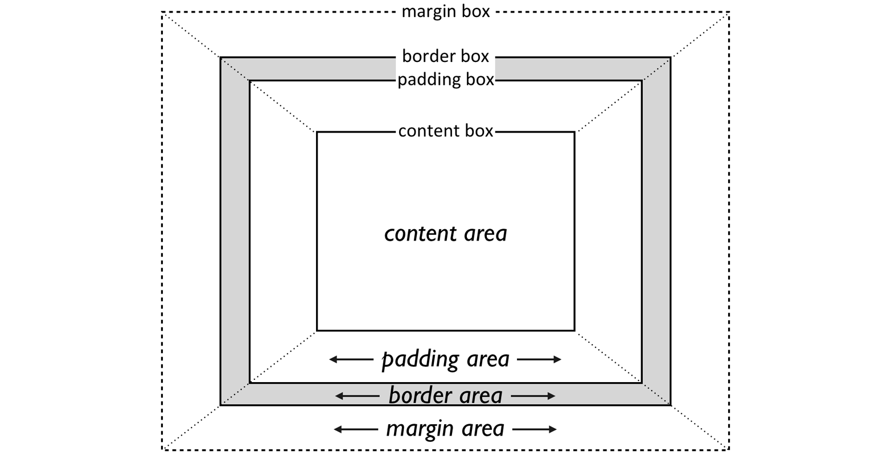
图 8-1： The CSS box model

The diagram in Figure 8-1 intentionally omits outlines, for reasons that will hopefully be clear once we discuss outlines.
Width and Height
It’s fairly common to explicitly define the width of an element, and historically much less common to explicitly define the height. By default, the width of an element is defined to be the distance from the left inner edge to the right inner edge, and the height is the distance from the inner top to the inner bottom. The properties that affect these distances are, unsurprisingly, called height and width.
显式定义元素的宽度相当常见，而在历史上显式定义元素的高度则少见得多。默认情况下，元素的宽度定义为从左内边缘到右内边缘的距离，而高度定义为从内顶部到内底部的距离。毫不奇怪，影响这些距离的属性被称为“高度”和“宽度”。
One important note about these two properties: they don’t apply to inline nonreplaced elements. For example, if you try to declare a height and width for a hyperlink that’s in the normal flow and generates an inline box, CSS-conformant browsers must ignore those declarations. Assume that the following rule applies:
关于这两个属性有一点需要注意:它们不应用于内联的不可替换元素。例如，如果您试图为正常流中的超链接声明高度和宽度并生成内联框，符合 css 的浏览器必须忽略这些声明。假设以下规则适用:
a:link {
color: red;
background: silver;
height: 15px;
width: 60px;
}You’ll end up with red unvisited links on silver backgrounds whose height and width are determined by the content of the links. They will not have content areas that are 15 pixels tall by 60 pixels wide. If, on the other hand, you add a display value, such as inline-block or block, then height and width will set the height and width of the links’ content areas.
你会在银色背景上得到一个红色的未访问链接，它的高度和宽度是由链接的内容决定的。他们将“不”有 15 像素高 60 像素宽的内容区域。另一方面，如果您添加了一个“显示”值，例如“内联块”或“块”，那么“高度”和“宽度”将设置链接内容区域的高度和宽度。
As of late 2017, there were a few new values being considered for height and width. These are stretch, min-content, max-content, and fit-content (in two forms). Support for these values was limited, and it’s not clear whether these values will be applied to height and width any time soon.
In the course of this chapter, we’ll usually keep the discussion simple by assuming that the height of an element is always calculated automatically. If an element is eight lines long, and each line is an eighth of an inch tall, then the height of the element is one inch. If it’s 10 lines tall, then the height is 1.25 inches. In either case, the height is determined by the content of the element, not by the author. It’s rarely the case that elements in the normal flow have a set height.
在本章的过程中，我们通常通过假设元素的高度总是自动计算来简化讨论。如果一个元素有 8 行，每一行都是 1/8 英寸高，那么元素的高度就是 1 英寸。如果是 10 行，那么高度是 1.25 英寸。在这两种情况下，高度是由元素的内容决定的，而不是由作者决定的。正常流中的元素很少有固定的高度。
It’s possible to change the meaning of height and width using the property box-sizing. This is not covered in this chapter, but in short, you can use either the content box or the border box as the area of measure. For the purposes of this chapter, we’ll assume the default situation holds: that height and width refer to the height and width of the content area (box-sizing: content-box).
8.2 Padding
Just beyond the content area of an element, we find its padding, nestled between the content and any borders. The simplest way to set padding is by using the property padding.
As you can see, this property accepts any length value, or a percentage value. So if you want all h2 elements to have 1 em of padding on all sides, it’s this easy (see Figure 8-2):
h2 {
padding: 2em;
background-color: silver;
}图 8-2： Adding padding to elements
As Figure 8-2 illustrates, the background of an element extends into the padding by default. If the background is transparent, this will create some extra transparent space around the element’s content, but any visible background will extend into the padding area (and beyond, as we’ll see in a later section).
如图 8-2 所示，默认情况下，元素的背景扩展到填充中。如果背景是透明的，这将在元素的内容周围创建一些额外的透明空间，但是任何可见的背景都将扩展到填充区域(以及其他区域，我们将在后面的小节中看到)。
Visible backgrounds can be prevented from extending into the padding by using the property background-clip.
By default, elements have no padding. The separation between paragraphs, for example, has traditionally been enforced with margins alone (as we’ll see later on). It’s also the case that, without padding, the border of an element will come very close to the content of the element itself. Thus, when putting a border on an element, it’s usually a good idea to add some padding as well, as Figure 8-3 illustrates.
默认情况下，元素没有填充。例如，传统上，段落之间的分隔仅靠边距执行（我们将在后面介绍）。在没有填充的情况下，元素的边框也会非常接近元素本身的内容。因此，在元素上加上边框时，通常最好还添加一些填充，如图 8-3 所示。
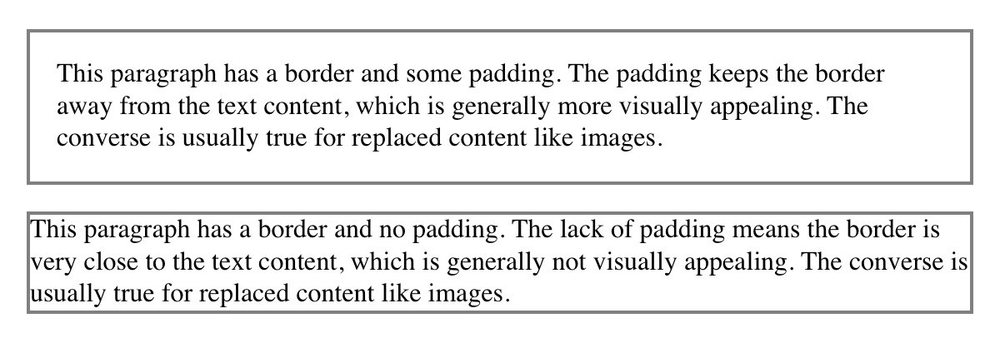
图 8-3： The effect of padding on bordered block-level elements
Any length value is permitted, from ems to inches. The simplest way to set padding is with a single length value, which is applied equally to all four padding sides. At times, however, you might desire a different amount of padding on each side of an element. If you want all h1 elements to have a top padding of 10 pixels, a right padding of 20 pixels, a bottom padding of 15 pixels, and a left padding of 5 pixels, here’s all you need:
h1 {
padding: 10px 20px 15px 5px;
}The order of the values is important, and follows this pattern:
padding: top right bottom left;A good way to remember this pattern is to keep in mind that the four values go clock‐wise around the element, starting from the top. The padding values are always applied in this order, so to get the effect you want, you have to arrange the values correctly.
An easy way to remember the order in which sides must be declared, other than thinking of it as being clockwise from the top, is to keep in mind that getting the sides in the correct order helps you avoid “TRouBLe”—that is, TRBL, for “Top Right Bottom Left.”
It’s also possible to mix up the types of length value you use. You aren’t restricted to using a single length type in a given rule, but can use whatever makes sense for a given side of the element, as shown here:
h2 {
padding: 14px 5em 0.1in 3ex;
} /* value variety! */Figure 8-4 shows you, with a little extra annotation, the results of this declaration.
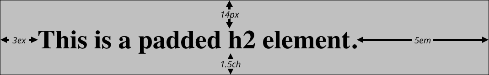
图 8-4： Mixed-value padding
8.2.1 Replicating Values
Sometimes, the values you enter can get a little repetitive:
p {
padding: 0.25em 1em 0.25em 1em;
} /* TRBL - Top Right Bottom Left */You don’t have to keep typing in pairs of numbers like this, though. Instead of the preceding rule, try this:
p {
padding: 0.25em 1em;
}These two values are enough to take the place of four. But how? CSS defines a few rules to accommodate fewer than four values for padding (and many other shorthand properties). These are:
- If the value for left is missing, use the value provided for right.
- If the value for bottom is missing, use the value provided for top.
- If the value for right is missing, use the value provided for top.
If you prefer a more visual approach, take a look at the diagram shown in Figure 8-5.
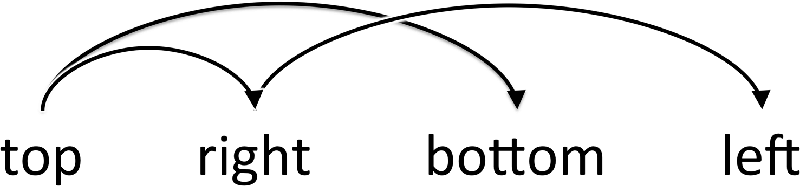
图 8-5： Value-replication pattern
In other words, if three values are given for padding, the fourth (left) is copied from the second (right). If two values are given, the fourth is copied from the second, and the third (bottom) from the first (top). Finally, if only one value is given, all the other sides copy that value.
This mechanism allows authors to supply only as many values as necessary, as shown here:
h1 {
padding: 0.25em 0 0.5em;
} /* same as '0.25em 0 0.5em 0' */
h2 {
padding: 0.15em 0.2em;
} /* same as '0.15em 0.2em 0.15em 0.2em' */
p {
padding: 0.5em 10px;
} /* same as '0.5em 10px 0.5em 10px' */
p.close {
padding: 0.1em;
} /* same as '0.1em 0.1em 0.1em 0.1em' */The method presents a small drawback, which you’re bound to eventually encounter. Suppose you want to set the top and left padding for h1 elements to be 10 pixels, and the bottom and right padding to be 20 pixels. In that case, you have to write the following:
h1 {
padding: 10px 20px 20px 10px;
} /* can't be any shorter */You get what you want, but it takes a while to get it all in. Unfortunately, there is no way to cut down on the number of values needed in such a circumstance. Let’s take another example, one where you want all of the padding to be zero—except for the left padding, which should be 3 em:
h2 {
padding: 0 0 0 3em;
}Using padding to separate the content areas of elements can be trickier than using the traditional margins, although it’s not without its rewards. For example, to keep paragraphs the traditional “one blank line” apart with padding, you’d have to write:
p {
margin: 0;
padding: 0.5em 0;
}The half-em top and bottom padding of each paragraph butt up against each other and total an em of separation. Why would you bother to do this? Because then you could insert separation borders between the paragraphs, should you so choose, and side borders will touch to form the appearance of a solid line. Both these effects are illustrated in Figure 8-6:
p {
margin: 0;
padding: 0.5em 0;
border-bottom: 1px solid gray;
border-left: 3px double black;
}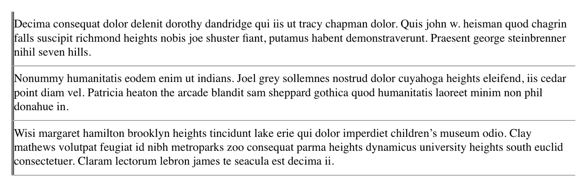
图 8-6： Using padding instead of margins
8.2.2 Single-Side Padding
Fortunately, there’s a way to assign a value to the padding on a single side of an element. Four ways, actually. Let’s say you only want to set the left padding of h2 elements to be 3em. Rather than writing out padding: 0 0 0 3em, you can take this approach:
h2 {
padding-left: 3em;
}padding-left is one of four properties devoted to setting the padding on each of the four sides of an element box. Their names will come as little surprise.
These properties operate in a manner consistent with their names. For example, the following two rules will yield the same amount of padding:
h1 {
padding: 0 0 0 0.25in;
}
h2 {
padding-left: 0.25in;
}Similarly, these rules are will create equal padding:
h1 {
padding: 0.25in 0 0;
} /* left padding is copied from right padding */
h2 {
padding-top: 0.25in;
}For that matter, so will these rules:
h1 {
padding: 0 0.25in;
}
h2 {
padding-right: 0.25in;
padding-left: 0.25in;
}It’s possible to use more than one of these single-side properties in a single rule; for example:
h2 {
padding-left: 3em;
padding-bottom: 2em;
padding-right: 0;
padding-top: 0;
background: silver;
}As you can see in Figure 8-7, the padding is set as we wanted. In this case, it might have been easier to use padding after all, like so:
h2 {
padding: 0 0 2em 3em;
}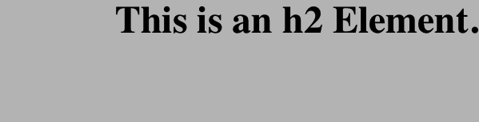
图 8-7： More than one single-side padding
In general, once you’re trying to set padding for more than one side, it’s easier to use the shorthand padding. From the standpoint of your document’s display, however, it doesn’t really matter which approach you use, so choose whichever is easiest for you.
8.2.3 Percentage Values and Padding
It’s possible to set percentage values for the padding of an element. Percentages are computed in relation to the width of the parent element’s content area, so they change if the parent element’s width changes in some way. For example, assume the following, which is illustrated in Figure 8-8:
p {
padding: 10%;
background-color: silver;
}<div style="width: 600px;">
<p>
This paragraph is contained within a DIV that has a width of 600 pixels, so
its padding will be 10% of the width of the paragraph's parent element.
Given the declared width of 600 pixels, the padding will be 60 pixels on all
sides.
</p>
</div>
<div style="width: 300px;">
<p>
This paragraph is contained within a DIV with a width of 300 pixels, so its
padding will still be 10% of the width of the paragraph's parent. There
will, therefore, be half as much padding on this paragraph as that on the
first paragraph.
</p>
</div>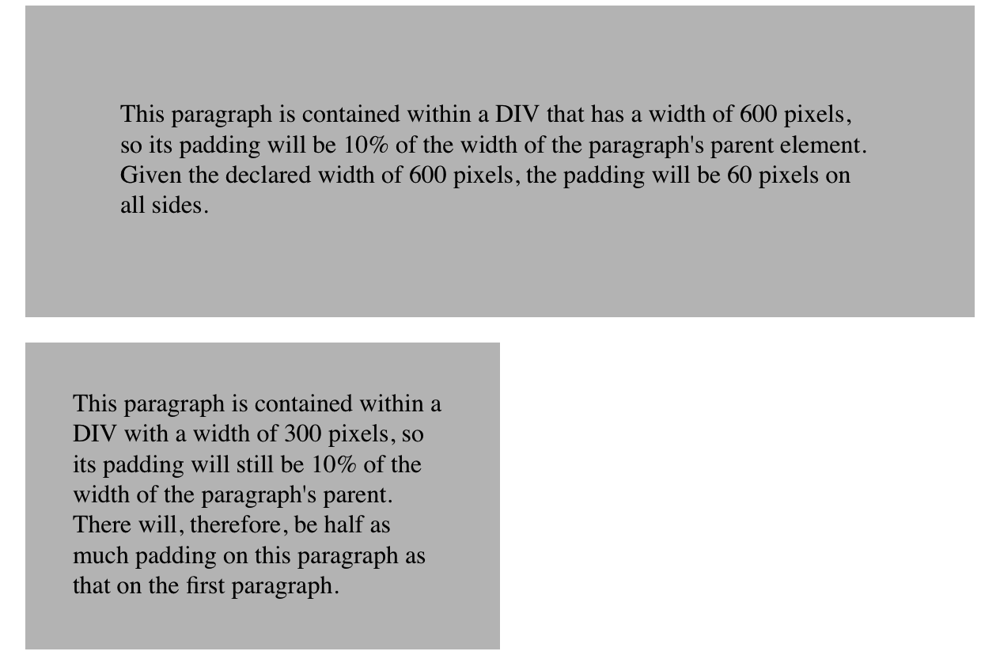
图 8-8： Padding, percentages, and the widths of parent elements
You may have noticed something odd about the paragraphs in Figure 8-8. Not only did their side padding change according to the width of their parent elements, but so did their top and bottom padding. That’s the desired behavior in CSS. Refer back to the property definition, and you’ll see that percentage values are defined to be relative to the width of the parent element. This applies to the top and bottom padding as well as to the left and right. Thus, given the following styles and markup, the top padding of the paragraph will be 50 px:
div p {
padding-top: 10%;
}<div style="width: 500px;">
<p>
This is a paragraph, and its top margin is 10% the width of its parent
element.
</p>
</div>If all this seems strange, consider that most elements in the normal flow are (as we are assuming) as tall as necessary to contain their descendant elements, including padding. If an element’s top and bottom padding were a percentage of the parent’s height, an infinite loop could result where the parent’s height was increased to accommodate the top and bottom padding, which would then have to increase to match the new height, and so on. Rather than ignore percentages for top and bottom padding, the specification authors decided to make it relate to the width of the parent’s content area, which does not change based on the width of its descendants.
By contrast, consider the case of elements without a declared width. In such cases, the overall width of the element box (including padding) is dependent on the width of the parent element. This leads to the possibility of fluid pages, where the padding on elements enlarges or reduces to match the actual size of the parent element. If you style a document so that its elements use percentage padding, then as the user changes the width of a browser window, the padding will expand or shrink to fit. The design choice is up to you.
The treatment of percentage values for top and bottom padding is different for most positioned elements, flex items, and grid items, where they are calculated with respect to the height of their formatting context.
It’s also possible to mix percentages with length values. Thus, to set h2 elements to have top and bottom padding of one-half em, and side padding of 10% the width of their parent elements, you can declare the following, illustrated in Figure 8-9:
h2 {
padding: 0.5em 10%;
}图 8-9： Mixed padding
Here, although the top and bottom padding will stay constant in any situation, the side padding will change based on the width of the parent element.
8.2.4 Padding and Inline Elements
You may or may not have noticed that the discussion so far has been solely about padding set for elements that generate block boxes. When padding is applied to inline nonreplaced elements, things can get a little different.
Let’s say you want to set top and bottom padding on strongly emphasized text:
strong {
padding-top: 25px;
padding-bottom: 50px;
}This is allowed in the specification, but since you’re applying the padding to an inline nonreplaced element, it will have absolutely no effect on the line height. Since padding is transparent when there’s no visible background, the preceding declaration will have no visual effect whatsoever. This happens because padding on inline nonreplaced elements doesn’t change the line height of an element.
Be careful: an inline nonreplaced element with a background color and padding can have a background that extends above and below the element, like this:
strong {
padding-top: 0.5em;
background-color: silver;
}Figure 8-10 gives you an idea of what this might look like.
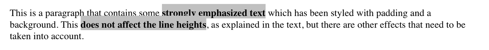
图 8-10： Top padding on an inline nonreplaced element
The line height isn’t changed, but since the background color does extend into the padding, each line’s background ends up overlapping the lines that come before it. That’s the expected result.
The preceding behaviors are true only for the top and bottom sides of inline nonreplaced elements; the left and right sides are a different story. We’ll start by considering the case of a small, inline nonreplaced element within a single line. Here, if you set values for the left or right padding, they will be visible, as Figure 8-11 makes clear (so to speak):
strong {
padding-left: 25px;
background: silver;
}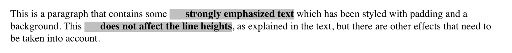
图 8-11： An inline nonreplaced element with left padding
Note the extra space between the end of the word just before the inline nonreplaced element and the edge of the inline element’s background. You can add that extra space to both ends of the inline if you want:
strong {
padding-left: 25px;
padding-right: 25px;
background: silver;
}As expected, Figure 8-12 shows a little extra space on the right and left sides of the inline element, and no extra space above or below it.
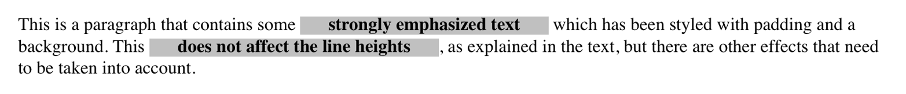
图 8-12： An inline nonreplaced element with 25-pixel side padding
Now, when an inline nonreplaced element stretches across multiple lines, the situation changes a bit. Figure 8-13 shows what happens when an inline nonreplaced element with a padding is displayed across multiple lines:
strong {
padding: 0 25px;
background: silver;
}The left padding is applied to the beginning of the element and the right padding to the end of it. By default, padding is not applied to the right and left side of each line. Also, you can see that, if not for the padding, the line may have broken after “background.” instead of where it did. padding only affects line breaking by changing the point at which the element’s content begins within a line.
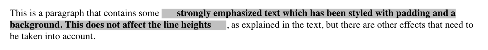
图 8-13： An inline nonreplaced element with 25-pixel side padding displayed across two lines of text
The way padding is (or isn’t) applied to the ends of each line box can be altered with the property box-decoration-break. See Chapter 7 for more details.
8.2.5 Padding and Replaced Elements
This may come as a surprise, but it is possible to apply padding to replaced elements. The most surprising case is that you can apply padding to an image, like this:
img {
background: silver;
padding: 1em;
}Regardless of whether the replaced element is block-level or inline, the padding will surround its content, and the background color will fill into that padding, as shown in Figure 8-14. You can also see in Figure 8-14 that padding will push a replaced element’s border (dashed, in this case) away from its content.
图 8-14： Padding replaced elements
Now, remember all that stuff about how padding on inline nonreplaced elements doesn’t affect the height of the lines of text? You can throw it all out for replaced elements, because they have a different set of rules. As you can see in Figure 8-15, the padding of an inline replaced element very much affects the height of the line.
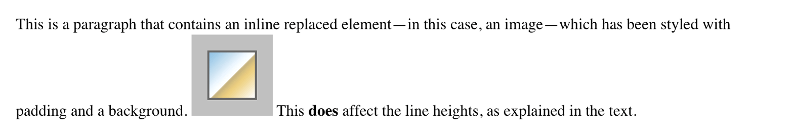
图 8-15： Padding replaced elements
The same goes for borders and margins, as we’ll soon see.

As of late 2017, there was still uncertainty over what to do about styling form elements such as input, which are replaced elements. It is not entirely clear where the padding of a checkbox resides, for example. Therefore, as of this writing, some browsers ignore padding (and other forms of styling) for form elements, while others apply the styles as best they can.
8.3 Borders
Beyond the padding of an element are its borders. The border of an element is just one or more lines that surround the content and padding of an element. By default, the background of the element will stop at the outer border edge, since the background does not extend into the margins, and the border is just inside the margin.
Every border has three aspects: its width, or thickness; its style, or appearance; and its color. The default value for the width of a border is medium, which is not an explicitly defined distance, but usually works out to be two pixels. Despite this, the reason you don’t usually see borders is that the default style is none, which prevents them from existing at all. (This lack of existence can also reset the border-width value, but we’ll get to that in a little while.)
Finally, the default border color is the foreground color of the element itself. If no color has been declared for the border, then it will be the same color as the text of the element. If, on the other hand, an element has no text—let’s say it has a table that contains only images—the border color for that table will be the text color of its parent element (thanks to the fact that color is inherited). That element is likely to be body, div, or another table. Thus, if a table has a border, and the body is its parent, given this rule:
body {
color: purple;
}then, by default, the border around the table will be purple (assuming the user agent doesn’t set a color for tables).
The CSS specification defines the background area of an element to extend to the outside edge of the border, at least by default. This is important because some borders are intermittent—for example, dotted and dashed borders—so the element’s background should appear in the spaces between the visible portions of the border.
Visible backgrounds can be prevented from extending into the border area by using the property background-clip. See Chapter 9 for details.
8.3.1 Borders with Style
We’ll start with border styles, which are the most important aspect of a border—not because they control the appearance of the border (although they certainly do that) but because without a style, there wouldn’t be any border at all.
CSS defines 10 distinct non-inherit styles for the property border-style, including the default value of none. The styles are demonstrated in Figure 8-16.
The style value hidden is equivalent to none, except when applied to tables, where it has a slightly different effect on border-conflict resolution.
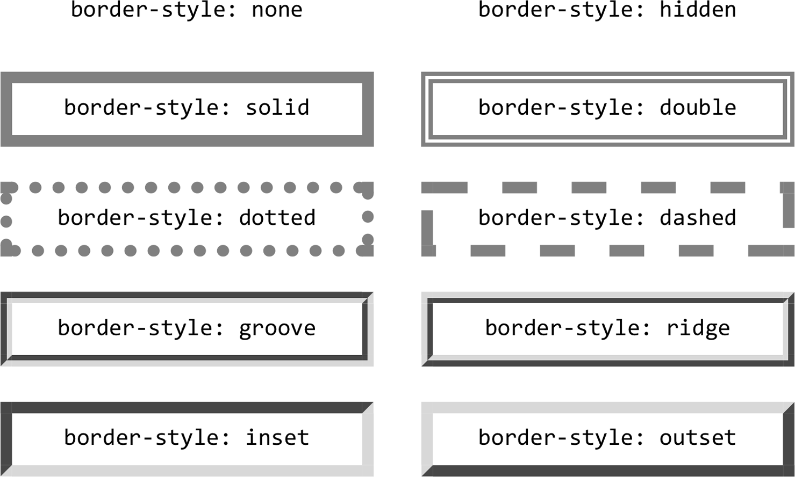
图 8-16： Border styles
The most unpredictable border style is double. It’s defined such that the width of the two lines it creates, plus the width of the space between them, is equal to the value of border-width (discussed in the next section). However, the CSS specification doesn’t say whether one of the lines should be thicker than the other, or if they should always be the same width, or if the space should be thicker or thinner than the lines. All of these things are left up to the user agent to decide, and the author has no reliable way to influence the final result.
All the borders shown in Figure 8-16 are based on a color value of gray, which makes all of the visual effects easier to see. The look of a border style is always based in some way on the color of the border, although the exact method may vary between user agents. The way browsers treat colors in the border styles inset, outset, groove, and ridge can and does vary. For example, Figure 8-17 illustrates two different ways of rendering an inset border.
图 8-17： Two valid ways of rendering inset
Note how one browser takes the gray value for the bottom and right sides, and a darker gray for the top and left; the other makes the bottom and right lighter than gray and the top and left darker, but not as dark as the first browser.
Now let’s define a border style for images that are inside any unvisited hyperlink. We might make them outset, so they have a “raised button” look, as depicted in Figure 8-18:
a:link img {
border-style: outset;
}图 8-18： Applying an outset border to a hyperlinked image
By default, the color of the border is based on the element’s value for color, which in this circumstance is likely to be blue. This is because the image is contained with a hyperlink, and the foreground color of hyperlinks is usually blue. If you so desired, you could change that color to silver, like this:
a:link img {
border-style: outset;
color: silver;
}The border will now be based on the light grayish silver, since that’s now the foreground color of the image—even though the image doesn’t actually use it, it’s still passed on to the border. We’ll talk about another way to change border colors in the section “Border Colors”.
Remember, though, that the color-shifting in borders is up to the user agent. Let’s go back to the blue outset border and compare it in two different browsers, as shown in Figure 8-19.
Again, notice how one browser shifts the colors to the lighter and darker, while another just shifts the “shadowed” sides to be darker than blue. This is why, if a specific set of colors is desired, authors usually set the exact colors they want instead of using a border style like outset and leaving the result up to the browser. We’ll soon see just how to do that.
图 8-19： Two outset borders
MULTIPLE STYLES
It’s possible to define more than one style for a given border. For example:
p.aside {
border-style: solid dashed dotted solid;
}The result is a paragraph with a solid top border, a dashed right border, a dotted bottom border, and a solid left border.
Again we see the top-right-bottom-left order of values, just as we saw in our discussion of setting padding with multiple values. All the same rules about value replication apply to border styles, just as they did with padding. Thus, the following two statements would have the same effect, as depicted in Figure 8-20:
p.new1 {
border-style: solid none dashed;
}
p.new2 {
border-style: solid none dashed none;
}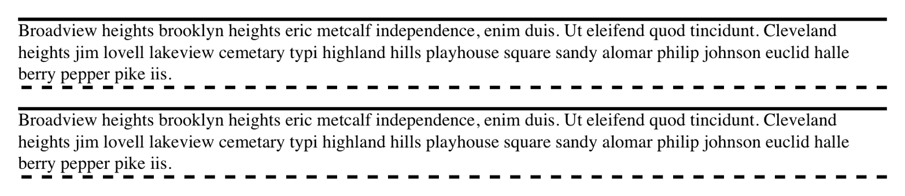
图 8-20： Equivalent style rules
SINGLE-SIDE STYLES
There may be times when you want to set border styles for just one side of an element box, rather than all four. That’s where the single-side border style properties come in.
Single-side border style properties are fairly self-explanatory. If you want to change the style for the bottom border, for example, you use border-bottom-style.
It’s not uncommon to see border used in conjunction with a single-side property. Suppose you want to set a solid border on three sides of a heading, but not have a left border, as shown in Figure 8-21.
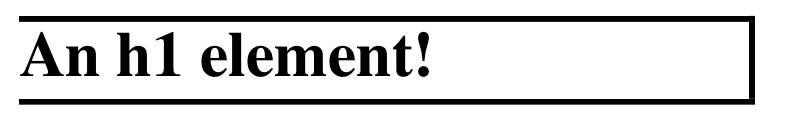
图 8-21： Removing the left border
There are two ways to accomplish this, each one equivalent to the other:
h1 {
border-style: solid solid solid none;
}
/* the above is the same as the below */
h1 {
border-style: solid;
border-left-style: none;
}What’s important to remember is that if you’re going to use the second approach, you have to place the single-side property after the shorthand, as is usually the case with shorthands. This is because border-style: solid is actually a declaration of border-style: solid solid solid solid. If you put border-style-left: none before the border-style declaration, the shorthand’s value will override the single-side value of none.
8.3.2 Border Widths
Once you’ve assigned a border a style, the next step is to give it some width, most easily by using the property border-width or one of its cousin properties.
Each of these properties is used to set the width on a specific border side, just as with the margin properties.
As of late 2017, border widths still cannot be given percentage values, which is rather a shame.
There are four ways to assign width to a border: you can give it a length value such as 4px or 0.1em, or use one of three keywords. These keywords are thin, medium (the default value), and thick. These keywords don’t necessarily correspond to any particular width, but are defined in relation to one another. According to the specification, thick is always wider than medium, which is in turn always wider than thin. Which makes sense.
However, the exact widths are not defined, so one user agent could set them to be equivalent to 5px, 3px, and 2px, while another sets them to be 3px, 2px, and 1px. No matter what width the user agent uses for each keyword, it will be the same throughout the document, regardless of where the border occurs. So if medium is the same as 2px, then a medium-width border will always be two pixels wide, whether the border surrounds an h1 or a p element. Figure 8-22 illustrates one way to handle these three keywords, as well as how they relate to each other and to the content they surround.
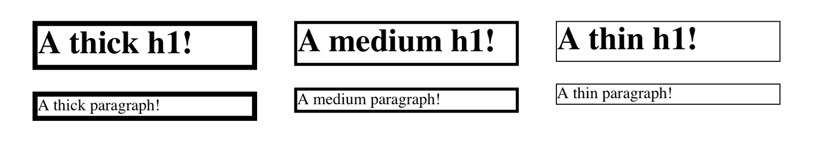
图 8-22： The relation of border-width keywords to each other
Let’s suppose a paragraph has a background color and a border style set:
p {
background-color: silver;
border-style: solid;
}The border’s width is, by default, medium. We can change that easily enough:
p {
background-color: silver;
border-style: solid;
border-width: thick;
}Of course, border widths can be taken to fairly ridiculous extremes, such as setting 50-pixel borders, as depicted in Figure 8-23:
p {background-color: silver; padding: 0.5em;
border-style: solid; border-width: 50px;}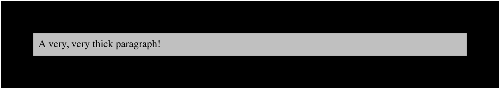
图 8-23： Really wide borders
It’s also possible to set widths for individual sides, using two familiar methods. The first is to use any of the specific properties mentioned at the beginning of the section, such as border-bottom-width. The other way is to use value replication in border-width, which is illustrated in Figure 8-24:
h1 {
border-style: dotted;
border-width: thin 0;
}
p {
border-style: solid;
border-width: 15px 2px 8px 5px;
}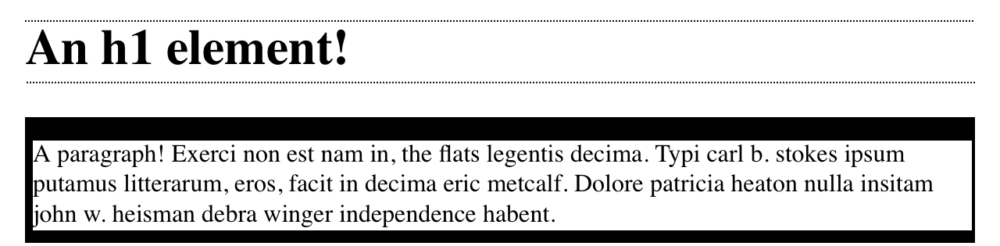
图 8-24： Value replication and uneven border widths
NO BORDER AT ALL
So far, we’ve talked only about using a visible border style such as solid or outset. Let’s consider what happens when you set border-style to none:
p {
border-style: none;
border-width: 20px;
}Even though the border’s width is 20px, the style is set to none. In this case, not only does the border’s style vanish, so does its width. The border just ceases to be. Why?
If you’ll remember, the terminology used earlier in the chapter was that a border with a style of none does not exist. Those words were chosen very carefully, because they help explain what’s going on here. Since the border doesn’t exist, it can’t have any width, so the width is automatically set to 0 (zero), no matter what you try to define. After all, if a drinking glass is empty, you can’t really describe it as being half-full of nothing. You can discuss the depth of a glass’s contents only if it has actual contents. In the same way, talking about the width of a border makes sense only in the context of a border that exists.
This is important to keep in mind because it’s a common mistake to forget to declare a border style. This leads to all kinds of author frustration because, at first glance, the styles appear correct. Given the following rule, though, no h1 element will have a border of any kind, let alone one that’s 20 pixels wide:
h1 {
border-width: 20px;
}Since the default value of border-style is none, failure to declare a style is exactly the same as declaring border-style: none. Therefore, if you want a border to appear, you need to declare a border style.
8.3.3 Border Colors
Compared to the other aspects of borders, setting the color is pretty easy. CSS uses the single property border-color, which can accept up to four color values at one time.
If there are fewer than four values, value replication takes effect as usual. So if you want h1 elements to have thin gray top and bottom borders with thick green side borders, and medium gray borders around p elements, the following styles will suffice, with the result shown in Figure 8-25:
h1 {
border-style: solid;
border-width: thin thick;
border-color: gray green;
}
p {
border-style: solid;
border-color: gray;
}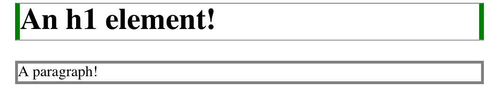
图 8-25： Borders have many aspects
A single color value will be applied to all four sides, as with the paragraph in the previous example. On the other hand, if you supply four color values, you can get a different color on each side. Any type of color value can be used, from named colors to hexadecimal and RGBA values:
p {
border-style: solid;
border-width: thick;
border-color: black rgba(25%, 25%, 25%, 0.5) #808080 silver;
}As mentioned earlier, if you don’t declare a color, the default color is the foreground color of the element. Thus, the following declaration will be displayed as shown in Figure 8-26:
p.shade1 {
border-style: solid;
border-width: thick;
color: gray;
}
p.shade2 {
border-style: solid;
border-width: thick;
color: gray;
border-color: black;
}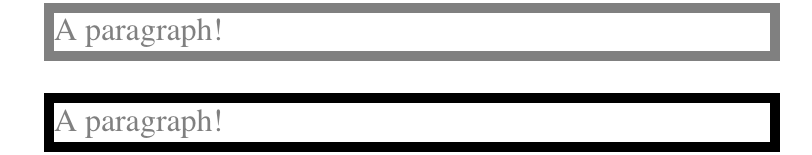
图 8-26： Border colors based on the element’s foreground and the value of the border-color property
The result is that the first paragraph has a gray border, having taken the value gray from the foreground color of the paragraph. The second paragraph, however, has a black border because that color was explicitly assigned using border-color.
There are single-side border color properties as well. They work in much the same way as the single-side properties for style and width. One way to give headings a solid black border with a solid gray right border is as follows:
h1 {
border-style: solid;
border-color: black;
border-right-color: gray;
}TRANSPARENT BORDERS
As you may recall, if a border has no style, then it has no width. There are, however, situations where you’ll want to create an invisible border that still has width. This is where the border color value transparent (introduced in CSS2) comes in.
Let’s say we want a set of three links to have borders that are invisible by default, but look inset when the link is hovered. We can accomplish this by making the borders transparent in the nonhovered case:
a:link,
a:visited {
border-style: inset;
border-width: 5px;
border-color: transparent;
}
a:hover {
border-color: gray;
}This will have the effect shown in Figure 8-27.
In a sense, transparent lets you use borders as if they were extra padding, with the additional benefit of being able to make them visible should you so choose. They act as padding because the background of the element extends into the border area by default, assuming there is a visible background.
图 8-27： Using transparent borders
8.3.4 Shorthand Border Properties
Unfortunately, shorthand properties such as border-color and border-style aren’t always as helpful as you’d think. For example, you might want to apply a thick, gray, solid border to all h1 elements, but only along the bottom. If you limit yourself to the properties we’ve discussed so far, you’ll have a hard time applying such a border. Here are two examples:
h1 {
border-bottom-width: thick; /* option #1 */
border-bottom-style: solid;
border-bottom-color: gray;
}
h1 {
border-width: 0 0 thick; /* option #2 */
border-style: none none solid;
border-color: gray;
}Neither is really convenient, given all the typing involved. Fortunately, a better solution is available:
h1 {
border-bottom: thick solid rgb(50%, 40%, 75%);
}This will apply the values to the bottom border alone, as shown in Figure 8-28, leaving the others to their defaults. Since the default border style is none, no borders appear on the other three sides of the element.
图 8-28： Setting a bottom border with a shorthand property
As you may have already guessed, there are a total of four such shorthand properties.
It’s possible to use these properties to create some complex borders, such as those shown in Figure 8-29:
h1 {
border-left: 3px solid gray;
border-right: green 0.25em dotted;
border-top: thick goldenrod inset;
border-bottom: double rgb(13%, 33%, 53%) 10px;
}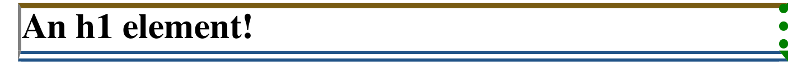
图 8-29： Very complex borders
As you can see, the order of the actual values doesn’t really matter. The following three rules will yield exactly the same border effect:
h1 {
border-bottom: 3px solid gray;
}
h2 {
border-bottom: solid gray 3px;
}
h3 {
border-bottom: 3px gray solid;
}You can also leave out some values and let their defaults kick in, like this:
h3 {
color: gray;
border-bottom: 3px solid;
}Since no border color is declared, the default value (the element’s foreground) is applied instead. Just remember that if you leave out a border style, the default value of none will prevent your border from existing.
By contrast, if you set only a style, you will still get a border. Let’s say you want a top border style of dashed and you’re willing to let the width default to medium and the color be the same as the text of the element itself. All you need in such a case is the following markup (shown in Figure 8-30):
p.roof {
border-top: dashed;
}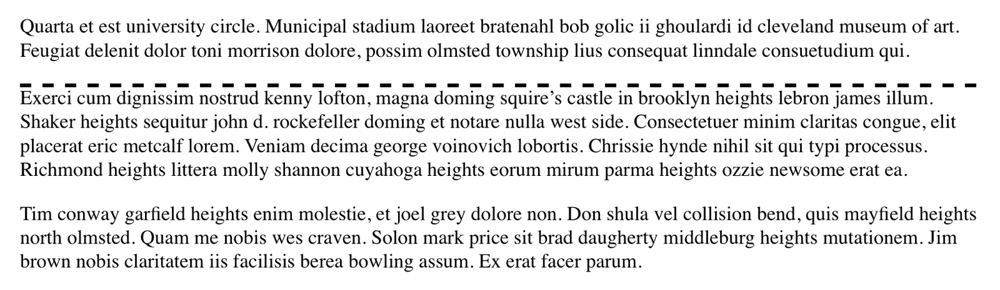
图 8-30： Dashing across the top of an element
Also note that since each of these border-side properties applies only to a specific side, there isn’t any possibility of value replication—it wouldn’t make any sense. There can be only one of each type of value: that is, only one width value, only one color value, and only one border style. So don’t try to declare more than one value type:
h3 {
border-top: thin thick solid purple;
} /* two width values--WRONG */In such a case, the entire statement will be invalid and a user agent would ignore it altogether.
8.3.5 Global Borders
Now, we come to the shortest shorthand border property of all: border.
This property has the advantage of being very compact, although that brevity introduces a few limitations. Before we worry about that, let’s see how border works. If you want all h1 elements to have a thick silver border, the following declaration would be displayed as shown in Figure 8-31:
h1 {
border: thick silver solid;
}The values are applied to all four sides. This is certainly preferable to the next-best alternative, which would be:
h1 {
border-top: thick silver solid;
border-bottom: thick silver solid;
border-right: thick silver solid;
border-left: thick silver solid;
} /* same result as previous example */图 8-31： A really short border declaration
The drawback with border is that you can define only global styles, widths, and colors. In other words, the values you supply for border will apply to all four sides equally. If you want the borders to be different for a single element, you’ll need to use some of the other border properties. Then again, it’s possible to turn the cascade to your advantage:
h1 {
border: thick goldenrod solid;
border-left-width: 20px;
}The second rule overrides the width value for the left border assigned by the first rule, thus replacing thick with 20px, as you can see in Figure 8-32.
图 8-32： Using the cascade to one’s advantage
You still need to take the usual precautions with shorthand properties: if you omit a value, the default will be filled in automatically. This can have unintended effects. Consider the following:
h4 {
border-style: dashed solid double;
}
h4 {
border: medium green;
}Here, we’ve failed to assign a border-style in the second rule, which means that the default value of none will be used, and no h4 elements will have any border at all.
8.3.6 Borders and Inline Elements
Dealing with borders and inline elements should sound pretty familiar, since the rules are largely the same as those that cover padding and inline elements, as we discussed earlier. Still, I’ll briefly touch on the topic again.
First, no matter how thick you make your borders on inline elements, the line height of the element won’t change. Let’s set top and bottom borders on boldfaced text:
strong {
border-top: 10px solid hsl(216, 50%, 50%);
border-bottom: 5px solid #aea010;
}Once more, this syntax is allowed in the specification, but it will have absolutely no effect on the line height. However, since borders are visible, they’ll be drawn—as you can see for yourself in Figure 8-33.
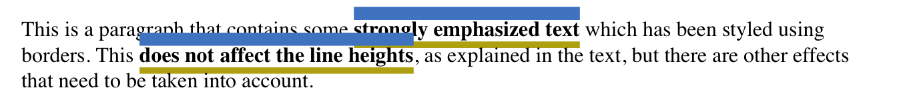
图 8-33： Borders on inline nonreplaced elements
The borders have to go somewhere. That’s where they went.
Again, all of this is true only for the top and bottom sides of inline elements; the left and right sides are a different story. If you apply a left or right border, not only will they be visible, but they’ll displace the text around them, as you can see in Figure 8-34:
strong {
border-left: 25px double hsl(216, 50%, 50%);
background: silver;
}With borders, just as with padding, the browser’s calculations for line breaking are not directly affected by any box properties set for inline nonreplaced elements. The only effect is that the space taken up by the borders may shift portions of the line over a bit, which may in turn change which word is at the end of the line.
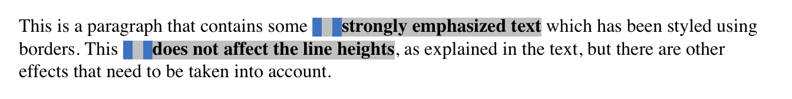
图 8-34： Inline nonreplaced elements with left borders
The way borders are (or aren’t) drawn at the ends of each line box can be altered with the property box-decoration-break. See Chapter 7 for more details.
With replaced elements such as images, on the other hand, the effects are very much like those we saw with padding: a border will affect the height of the lines of text, in addition to shifting text around to the sides. Thus, assuming the following styles, we get a result like that seen in Figure 8-35.
img {
border: 1em solid rgb(216, 108, 54);
}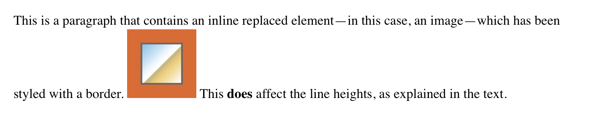
图 8-35： Borders on inline replaced elements
8.3.7 Rounding Border Corners
It’s possible to soften the harsh corners of element borders by using the property border-radius to define a rounding distance (or two). In this particular case, we’re actually going to start with the shorthand property and then mention the individual properties at the end of the section.
The radius of a border is the radius of a circle or ellipse, one quarter of which is used to define the path of the border’s rounding. We’ll start with circles, because they’re a little easier to understand.
Suppose we want to round the corner of an element so that each corner has pretty obviously rounded. Here’s one way to do that:
#example {
border-radius: 2em;
}That will have the result shown in Figure 8-36, where circle diagrams have been added to two of the corners. (The same rounding is done in all four corners.)
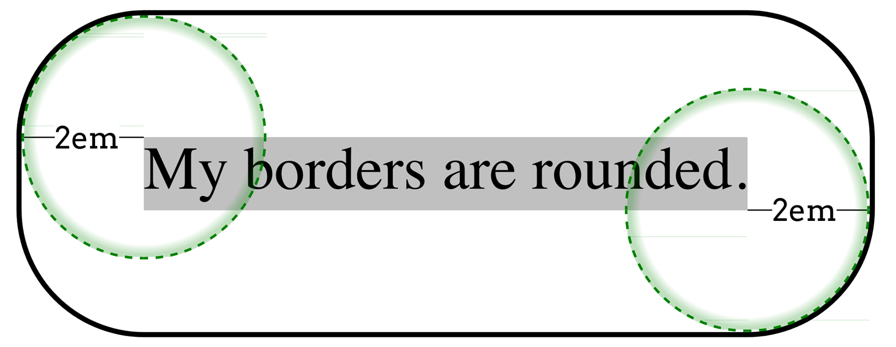
图 8-36： How border radii are calculated
Focus on the top left corner. There, the border begins to curve 2 em below the top of the border, and 2 em to the right of the left side of the border. The curve follows along the outside of the 2-em-radius circle.
If we were to draw a box that just contained the part of the top left corner that was curved, that box would be 2em wide and 2em tall. The same thing would happen in the bottom right corner.
With single length values, we get circular corner rounding shapes. If a single percentage is used, the results are far more oval. For example, consider the following, illustrated in Figure 8-37.
#example {
border-radius: 33%;
}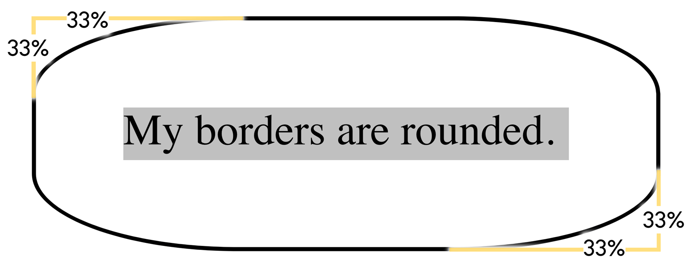
图 8-37： How percentage border radii are calculated
Again, let’s focus on the top left corner. On the left edge, the border curve begins at the point 33% of the element box’s height down from the top. In other words, if the element box is 100 pixels tall from top border edge to bottom border edge, the curve begins 33 pixels from the top of the element box.
Similarly, on the top edge, the curve begins at the point 33% of the element box’s width from the left edge. So if the box is (say) 600 pixels wide, the curve begins 198 pixels from the left edge, because 600 * 0.33 = 198.
The shape of the curve between those two points is identical to the top left edge of an ellipse whose horizontal radius is 198 pixels long, and whose vertical radius is 33 pixels long. (This is the same as an ellipse with a horizontal axis of 396 pixels and a vertical axis of 66 pixels.)
The same thing is done in each corner, leading to a set of corner shapes that mirror each other, rather than being identical.
Supplying a single length or percentage value for border-radius means all four corners will have the same rounding shape. As you may have spotted in the syntax definnition, similar to padding or some other shorthands like border-style, you can supply border-radius with up to four values. They go in clockwise order from top left to bottom left, like so:
#example {
border-radius: 1em /* Top Left */ 2em /* Top Right */ 3em /* Bottom Right */
4em; /* Bottom Left */
}This TL-TR-BR-BL can be remembered with the mnemonic “TiLTeR BuRBLe,” if you’re inclined to such things. The important thing is that the rounding starts in the top left, and works its way clockwise from there.
If a value is left off, then the missing values are filled in using a pattern like that used for padding and so on. If there are three values, the fourth is copied from the second. If there are two, the third is copied from the first and the fourth from the second. Just one, and the missing three are copied from the first. Thus, the following two rules are identical, and will have the result shown in Figure 8-38.
#example {
border-radius: 1em 2em 3em 2em;
}
#example {
border-radius: 1em 2em 3em; /* BL copied from TR */
}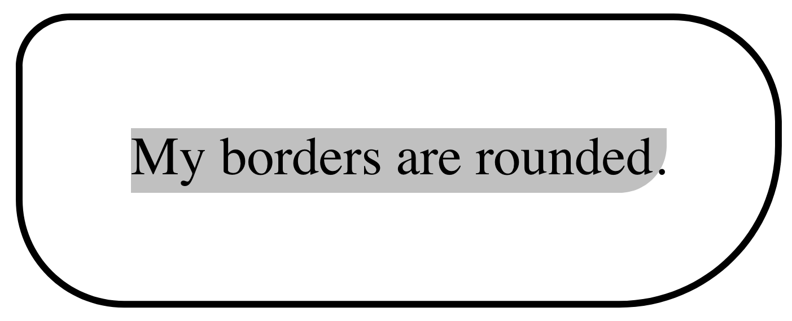
图 8-38： A variety of rounded corners
There’s an important aspect to Figure 8-38: the rounding of the content area’s background along with the rest of the background. See how the silver curves, and the period sits outside it? That’s the expected behavior in a situation where the content area’s background is different than the padding background (we’ll see how to do that in the next chapter) and the curving of a corner is large enough to affect the boundary between content and padding.
This is because while border-radius changes how the border and background(s) of an element are drawn, it does not change the shape of the element box. Consider the situation depicted in Figure 8-39.
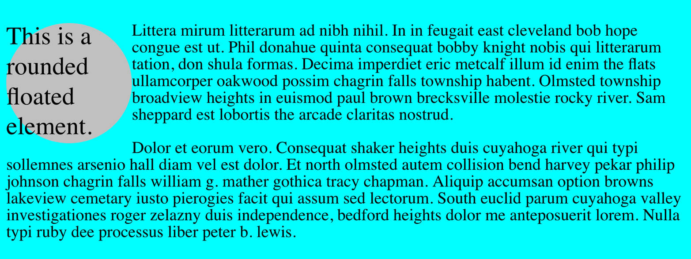
图 8-39： Elements with rounded corners are still boxes
There, we can see an element that’s been floated to the left, and other text flowing past it. The border corners have been completely rounded off using border-radius: 50%, and some of its text is sticking out past the rounded corners. Beyond the rounded corners, we can also see the page background visible where the corners would have been, were they not rounded.
So at a glance, you might assume that the element has been reshaped from box to circle (technically ellipse), and the text just happens to stick out of it. But look at the text flowing past the float. It doesn’t flow into the area the rounded corners “left behind.” That’s because the corners of the floated element are still there. They’re just not visibly filled by border and background, thanks to border-radius.
And what happens if a radius value is so large that it would spill into other corners? For example, what happens with border-radius: 100%? Or border-radius: 9999px on an element that’s nowhere near ten thousand pixels tall or wide?
In any such case, the rounding is “clamped” to the maximum it can be for a given quadrant of the element. Making sure that buttons always look little medical lozenges can be done like so:
.button {
border-radius: 9999em;
}That will just cap off the shortest ends of the element (usually the left and right sides, but no guarantees) to be smooth semicircular caps.
MORE COMPLEX CORNER SHAPING
Now that we’ve seen how assigning a single radius value to a corner shapes it, let’s talk about what happens when corners get two values—and, more importantly, how they get those values.
For example, suppose we want corners to be rounded by 3 character units horizontally, and 1 character unit vertically. We can’t just say border-radius: 3ch 1ch because that will round the top left and bottom right corners by 3ch, and the other two corners by 1ch each. Inserting a forward slash will get us what we’re after:
#example {
border-radius: 3ch / 1ch;
}This is functionally equivalent to saying:
#example {
border-radius: 3ch 3ch 3ch 3ch / 1ch 1ch 1ch 1ch;
}The way this syntax works, the horizontal radius of each corner’s rounding ellipse is given, and then after the slash, the vertical radius of each corner is given. In both cases, the values are in “TiLTeR BuRBLe” order.
Here’s a simpler example, illustrated in Figure 8-40:
#example {
border-radius: 1em / 2em;
}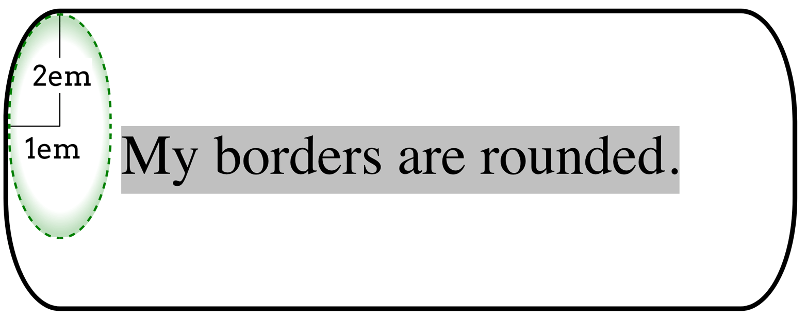
图 8-40： Elliptical corner rounding
Each corner is rounded by 1em along the horizontal axis, and 2em along the vertical axis, in the manner we saw in detail in the previous section.
Here’s a slightly more complex version, providing two lengths to either side of the slash, as depicted in Figure 8-41:
#example {
border-radius: 1em 2em / 2em 3em;
}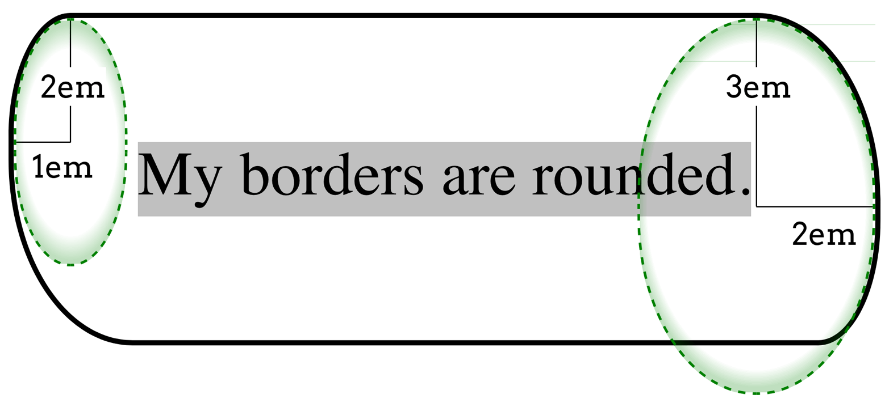
图 8-41： Different elliptical rounding calculations
In this case, the top left and bottom right corners are curved 1em along the horizontal axis, and 2em along the vertical axis. The top right and bottom left corners, on the other hand, are curved 2em along the horizontal and 3 along the vertical.
However! Don’t think the 1em 2em to the left of the slash defines the first corner set, and the 2em 3em to the right of the slash defines the second. Remember, it’s horizontal values before the slash, and vertical after. If we’d wanted to make the top left and bottom right corners be rounded 1em horizontally and 1em vertically (a circular rounding), the values would have been written like so:
#example {
border-radius: 1em 2em / 1em 3em;
}Percentages are also fair game here. If we want to round the corners of an element so that the sides are fully rounded but only extend 2 character units into the element horizontally, we’d write it like so:
#example {
border-radius: 2ch / 50%;
}CORNER BLENDING
So far, the corners we’ve rounded have been pretty simple—always the same width, style and color. That won’t always be the case, though. What happens if a tick red solid border is rounded into a thin dashed green border?
The specification directs that the rounding cause as smooth a blend as possible when it comes to the width. In other words, when rounding from a thicker border to a thinner border, the width of the border should gradually shrink throughout the curve of the rounded corner.
When it comes to differing styles and colors, the specification is less clear about how this should be accomplished. Consider the various samples shown in Figure 8-42.
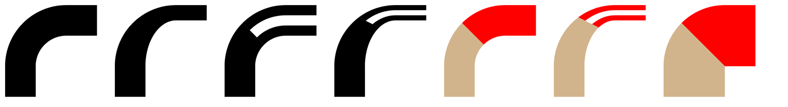
图 8-42： Rounded corners up close
The first is a simple rounded corner, with no variation in color, width, or style. The second shows rounding from one thickness to another. You can visualize this second case as a shape defined by a circular shape on the outer edge and en elliptical shape on the inner edge.
In the third case, the color and thickness stay the same, but the corner curves from a solid style on the left to a double-line style on top. The transition between styles is abrupt, and occurs at the halfway point in the curve.
The fourth example shows a transition from a thick solid to a thinner double border. Note the placement of the transition, which is not at the halfway point. It is instead determined by taking the ratio of the two borders’ thicknesses, and using that to find the transition point. Let’s assume the left border is 10px thick and the top border 5px thick. By summing the two to get 15px, the left border gets 2/3 (10/15) and the top border 1/3 (5/15). Thus, the left border’s style is used in two-thirds of the curve, and the top border‘s style in one-third the curve. The width is still smoothly changed over the length of the curve.
The fifth and sixth examples show what happens with color added to the mix. Effectively, the color stays linked to the style. This hard transition between colors is common behavior amongst browsers as of late 2017, but it may not always be so. The specification explicitly states that user agents may blend from one border color to another by using a linear gradient. Perhaps one day they will, but for now, the changeover is instantaneous.
The seventh example in Figure 8-42 shows a case we haven’t really discussed which is: “What happens if the borders are equal to or thicker than the value of border-radius?” In the case, the outside of the corner is rounded, but the inside is not, as shown. This would occur in a case like the following:
#example {
border-style: solid;
border-color: tan red;
border-width: 20px;
border-radius: 20px;
}INDIVIDUAL ROUNDING PROPERTIES
After that tour of border-radius, you might be wondering if maybe you could just round one corner at a time. Yes, you can!
Each property sets the curve shape for its corner, and doesn’t affect the others. The fun part is that if you supply two values, one for the horizontal radius and one for the vertical radius, there is not a slash separating them. Really. This means that the following two rules are functionally equivalent:
#example {
border-radius: 1.5em 2vw 20% 0.67ch / 2rem 1.2vmin 1cm 10%;
}
#example {
border-top-left-radius: 1.5em 2rem;
border-top-right-radius: 2vw 1.2vmin;
border-bottom-right-radius: 20% 1cm;
border-bottom-left-radius: 0.67ch 10%;
}The individual corner border radius properties are mostly useful for scripting, or for setting a common corner rounding and then overriding just one. Thus, a right-hand-tab shape could be done as follows:
.tabs {
border-radius: 2em;
border-bottom-left-radius: 0;
}One thing to keep in mind that, as we’ve seen, corner shaping affects the background and (potentially) the padding and content areas of the element, but not any image borders. Wait a minute, image borders? What are those? Glad you asked!
8.3.8 Image Borders
The various border styles are nice enough, but are still fairly limited. What if you want to create a really complicated, visually rich border around some of your elements? Back in the day, we’d create complex multirow tables to achieve that sort of effect, but thanks to the image borders added to CSS in the recent past, there’s almost no limit to the kinds of borders you can create.
LOADING AND SLICING A BORDER IMAGE
If you’re going to use an image to create the borders of an image, you’ll need to fetch it from somewhere. border-image-source is how you tell the browser where to look for it.
Let’s load an image of a single circle to be used as the border image, using the following styles, whose result is shown in Figure 8-43:
border: 25px solid;
border-image-source: url(i/circle.png);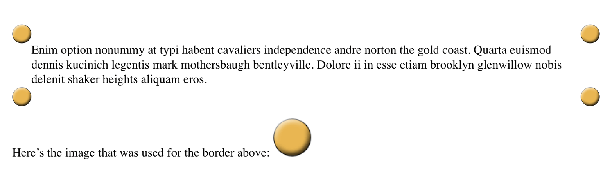
图 8-43： Defining a border image’s source
There are a number of things to note here. First, without the border: 25px solid declaration, there would have been no border at all. Remember, if the value of border-style is none, then the width of the border is zero. So in order to make a border image appear, you need to declare a border-style value other than none. It doesn’t have to be solid. Second, the value of border-width determines the actual width of the border images. Without a declared value, it will default to medium, which is in the vicinity of 3 pixels. (Actual value may vary.)
OK, so we set up a border area 25 pixels wide, and then applied an image to it. That gave us the same circle in each of the four corners. But why did it only appear there, and not along the sides? The answer to that is found in the way border-image-slice is defined.
What border-image-slice does is set up a set of four slice-lines that are laid over the image, and where they fall determines how the image will be sliced up for use in an image border. It takes up to four values, defining (in order) offsets from the top, right, bottom, and left edges. Yep, there’s that TRBL pattern again! And value replication is also in effect here, so one value is used for all four offsets. Figure 8-44 shows a small sampling of offset patterns, all based on percentages.
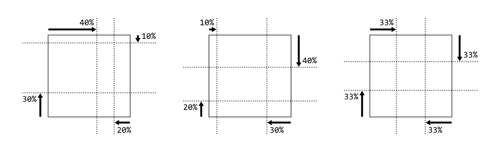
图 8-44： Various slicing patterns
Now let’s take an image that has a 3 × 3 grid of circles, each a different color, and slice it up for use in an image border. Figure 8-45 shows a single copy of this image and the resulting image border:
border: 25px solid;
border-image-source: url(i/circles.png);
border-image-slice: 33.33%;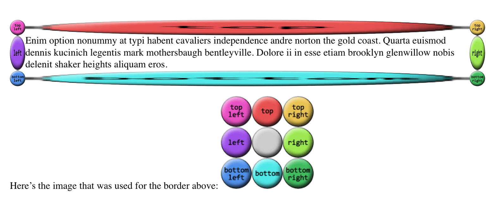
图 8-45： An all-around image border
Yikes! That’s…interesting. The stretchiness of the sides is actually the default behavior, and it makes a fair amount of sense, as we’ll see (and find out how to change) in the upcoming section, “Altering the repeat pattern”. Beyond that effect, you can see in Figure 8-45 that the slice-lines fall right between the circles, because the circles are all the same size and so one-third offsets place the slice-lines right between them. The corner circles go into the corners of the border, and each side’s circle is stretched out to fill its side.
(Wait, what happened to the gray circle in the middle? you may wonder. It’s an interesting question! For now, just accept it as one of life’s little mysteries, albeit a mystery that will be explained later in this section.)
All right, so why did our first border image example, back at the beginning of the section, only place images in the corners of the border area instead of all the way around it? Because there’s an interesting wrinkle in the way border-image-slice is defined. Here’s how the relevant bits of the specification read:
if the sum of the right and left [border-image-slice] widths is equal to or greater than the width of the image, the images for the top and bottom edge and the middle part are empty…Analogously for the top and bottom values.
In other words, any time the slice-lines meet or go past each other, the corner images are created but the side images are made empty. This is easiest to visualize with border-image-slice: 50%. In that case, the image is sliced into four quadrants, one for each corner, with nothing remaining for the sides. However, any value above 50% has the same basic result, even though the image isn’t sliced into neat quadrants anymore. Thus, for border-image-slice: 100%—which is the default value—each corner gets the entire image, and the sides are left empty. A few examples of this effect are shown in Figure 8-46.
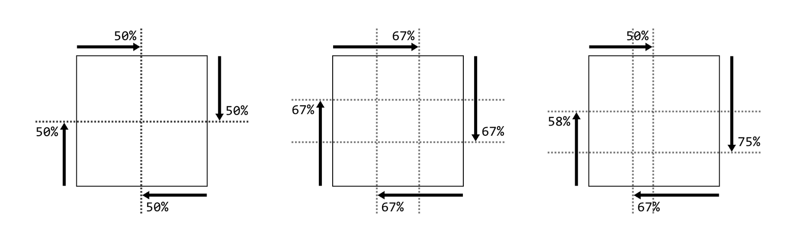
图 8-46： Various patterns that prevent side slices
That’s why we had to have a 3 × 3 grid of circles when we wanted to go all the way around the border area, corners, and sides.
In addition to percentage offsets, it’s also possible to define the offsets using a number. Not a length, as you might assume, but a bare number. In raster images like PNGs or JPEGs, the number corresponds to pixels in the image on a 1:1 basis. If you have a raster image where you want to define 25-pixel offsets for the slice-lines, this is how to do that, as illustrated in Figure 8-47:
border: 25px solid;
border-image-source: url(i/circles.png);
border-image-slice: 25;Yikes again! What happened there is that the raster image is 150 × 150 pixels, so each circle is 50 × 50 pixels. Our offsets, though, were only 25, as in 25 pixels. So the slice-lines were placed on the image as shown in Figure 8-48.
This begins to give an idea of why the default behavior for the side images is to stretch them. Note how the corners flow into the sides, visually speaking.
Number offsets don’t scale when changes are made to an image and its size, whereas percentages do. The interesting thing about number offsets is that they work just as well on non-raster images, like SVGs, as they do on rasters. So do percentages. In general, it’s probably best to use percentages for your slicing offsets whenever possible, even if means doing a little math to get exactly the right percentages.
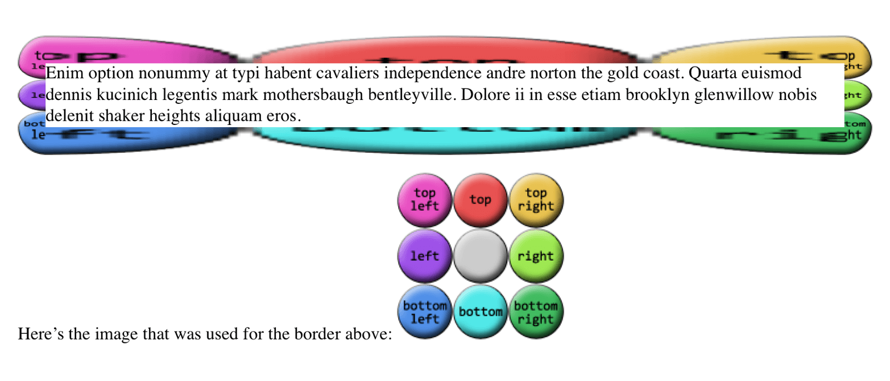
图 8-47： Number slicing
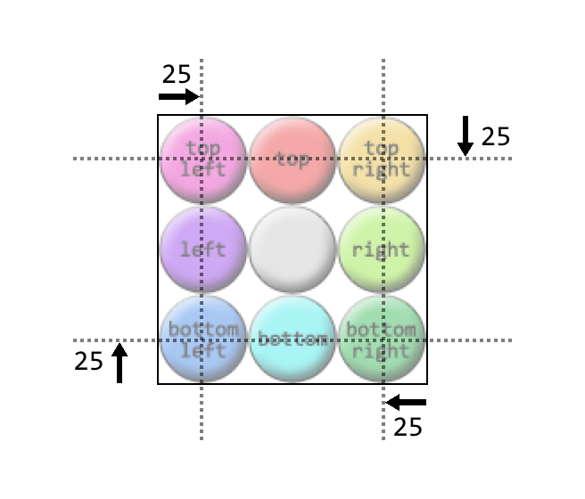
图 8-48： Slice-lines at 25 pixels
Now let’s address the curious case of the image’s center. In the previous examples, there’s a circle at the center of the 3 × 3 grid of circles, but it disappears when the image is applied to the border. In the last example, in fact, it wasn’t just the middle circle that was missing, but the entire center slice. This dropping of the center slice is the default behavior for image-slicing, but you can override it by adding a fill keyword to the end of your border-image-slice value. If we add fill to the previous example, as shown here, we’ll get the result shown in Figure 8-49:
border: 25px solid;
border-image-source: url(i/circles.png);
border-image-slice: 25 fill;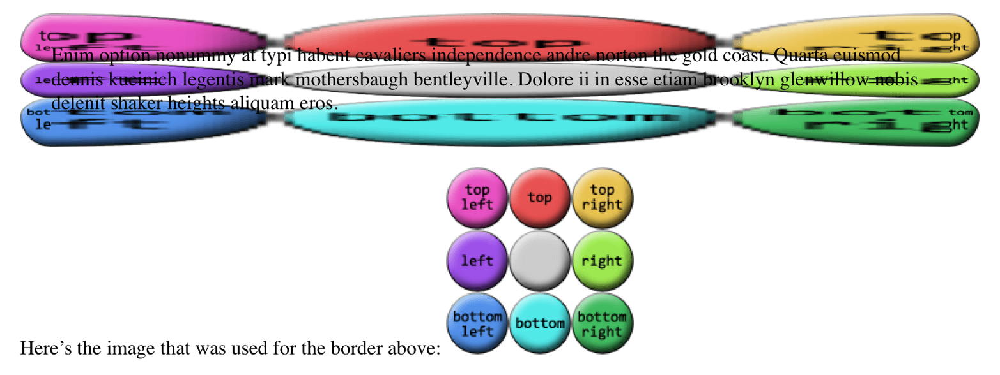
图 8-49： Using the fill slice
There’s the center slice, filling up the element’s background area. In fact, it’s drawn over top of whatever background the element might have, so you can use it as a substitute for the background, or as an addition to it.
You may have noticed that all our border areas have been a consistent width (usually 25px). This doesn’t have to be the case, regardless of how the border image is actually sliced up. Suppose we take the circles border image we’ve been using, slice it by thirds as we have, but make the border widths different. That would have a result like that shown in Figure 8-50:
border-style: solid;
border-width: 20px 40px 60px 80px;
border-image-source: url(i/circles.png);
border-image-slice: 50;Even though the slice-lines are intrinsically set to 50 pixels (via 50), the resulting slices are resized to fit into the border areas they occupy.
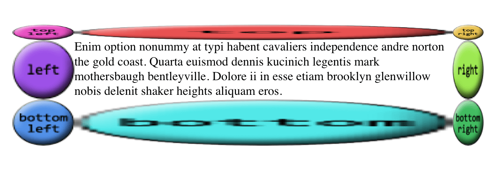
图 8-50： Uneven border image widths
ALTERING THE IMAGE WIDTHS
Thus far, all our image borders have depended on a border-width value to set the sizes of the border areas, which the border images have filled out precisely. That is, if the top border side is 25 pixels tall, the border image that fills it will be 25 pixels tall. In cases where you want to make the images a different size than the area defined by border-width, there’s border-image-width.
The basic thing to understand about border-image-width is that it’s very similar to border-image-slice, except what border-image-width slices up is the border box itself.
To understand what this means, let’s start with length values. We’ll set up 1 em border widths like so:
border-image-width: 1em;What that does is push slice-lines 1 em inward from each of the border area’s sides, as shown in Figure 8-51.
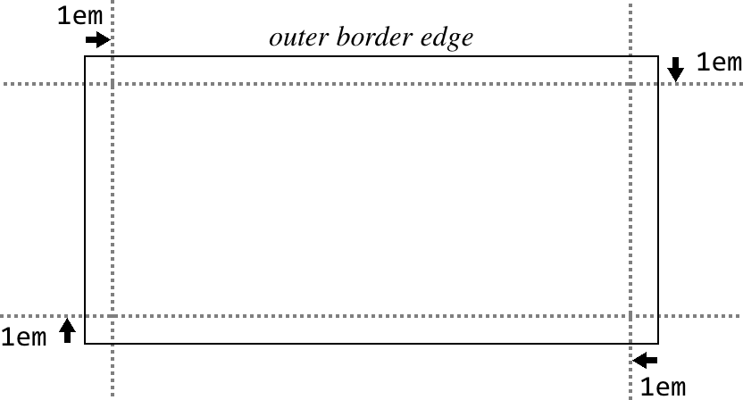
图 8-51： Placing slice-lines for the border image’s width
So the top and bottom border areas are 1 em tall, the right and left border areas are 1 em wide, and the corners are each 1 em tall and wide. Given that, the border images created with border-image-slice are filled into those border areas in the manner prescribed by border-image-repeat (which we’ll get to shortly). Thus, the following styles give the result shown in Figure 8-52:
border-image-width: 1em;
border-image-slice: 33.3333%;Note that these areas are sized independently from the value of border-width. Thus, in Figure 8-52, we could have had a border-width of zero and still made the border images show up, by using border-image-width. This is useful if you want to have a solid border as a fallback in case the border image doesn’t load, but don’t want to make it as thick as the image border would be. Something like this:
border: 2px solid;
border-image-source: url(stars.gif);
border-image-width: 12px;
border-image-slice: 33.3333%;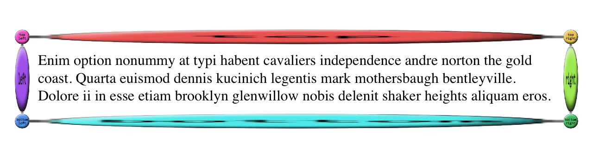
图 8-52： Filling in the border areas
This allows for a 12-pixel star border to be replaced with a 2-pixel solid border if border images aren’t available. Remember that if the image border does load, you’ll need to leave enough space for it to show up without overlapping the content! (By default, that is. We’ll see how to mitigate this problem in the next section.)
Now that we’ve established how the width slice-lines are placed, the way percentage values are handled should make sense, as long as you keep in mind that the offsets are with respect to the overall border box, not each border side. For example, consider the following declaration, illustrated in Figure 8-53:
border-image-width: 33%;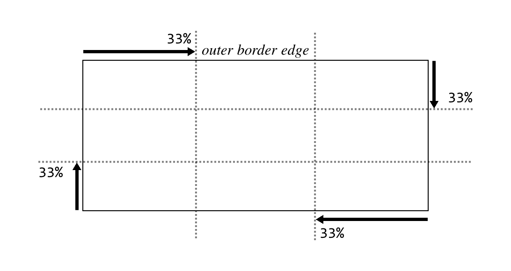
图 8-53： Placement of percentage slice-lines
As with length units, the lines are offset from their respective sides of the border box. The distance they travel is with respect to the border box. A common mistake is to assume that a percentage value is with respect to the border area defined by border-width; that is, given a border-width value of 30px, the result of border-image-width: 33.333%; will be 10 pixels. But no! It’s one-third the overall border box along that axis.
One way in which the behavior of border-image-width differs from border-image-slice is in how it handles situations where the slices pass each other, such as in this situation:
border-image-width: 75%;If you recall, for border-image-slice, if the slices passed each other, then the side areas (top, right, bottom, and/or left) are made empty. With border-image-width, the values are proportionally reduced until they don’t. So, given the preceding value of 75%, the browser will treat that as if it were 50%. Similarly, the following two declarations will have equivalent results:
border-image-width: 25% 80% 25% 40%;
border-image-width: 25% 66.6667% 25% 33.3333%;Note how in both declarations, the right offset is twice the left value. That’s what’s meant by proportionally reducing the values until they don’t overlap: in other words, until they no longer add up to more than 100%. The same would be done with top and bottom, were they to overlap.
When it comes to number values for border-image-width, things get even more interesting. If you set border-image-width: 1, then the border image areas will be determined by the value of border-width. That’s the default behavior. Thus, the following two declarations will have the same result:
border-width: 1em 2em;
border-image-width: 1em 2em;
border-width: 1em 2em;
border-image-width: 1;You can increase or reduce the number values in order to get some multiple of the border area that border-width defines. A few examples of this can be seen in Figure 8-54.
In each case, the number has been multipled by the border area’s width or height, and the resulting value is how far in the offset is placed from the relevant side. Thus, for an element where border-top-width is 3 pixels, border-image-width: 10 will create a 30-pixel offset from the top of the element. Change border-image-width to 0.333, and the top offset will be a lone pixel.
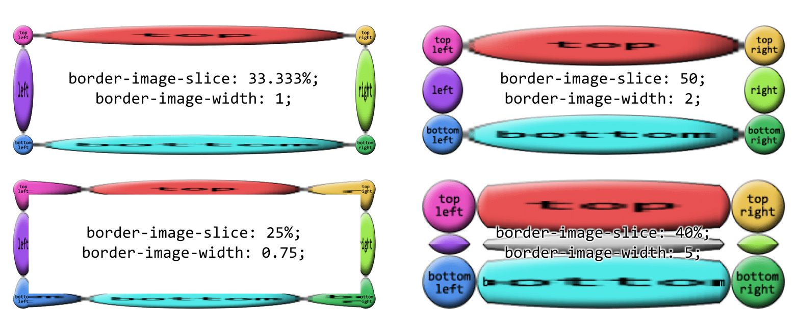
图 8-54： Various numeric border image widths
The last value, auto, is interesting in that its resulting values depend on the state of two other properties. If border-image-slice is defined, then border-image-width: auto uses the values that result from border-image-slice. Otherwise, it uses the values that result from border-width. These two declarations will have the same result:
border-width: 1em 2em;
border-image-width: auto;
border-image-slice: 1em 2em;
border-image-width: auto;This differs from border-image-width: 1 because number values like 1 always relate to the value of border-width, regardless of what border-image-slice might say.
Note that you can mix up the value types for border-image-width. The following are all valid, and would be quite interesting to try out in live web pages:
border-image-width: auto 10px;
border-image-width: 5 15% auto;
border-image-width: 0.42em 13% 3.14 auto;CREATING A BORDER OVERHANG
Well, now that we can define these great big image slices and widths, what do we do to keep them from overlapping the content? We could add lots of padding, but that would leave huge amounts of space if the image fails to load, or if the browser doesn’t support border images. Handling such scenarios is what border-image-outset is built to manage.
Regardless of whether you use a length or a number, border-image-outset pushes the border image area outward, beyond the border box, in a manner similar to how slice-lines are offset. The difference is that here, the offsets are outward, not inward. Just as with border-image-width, number values for border-image-outset are a multiple of the width defined by border-width—not border-image-width.
To see how this could be helpful, imagine a scenario where we want to use a border image, but have a fallback of a thin solid border if the image isn’t available. We might start out like this:
border: 2px solid;
padding: 0.5em;
border-image-slice: 10;
border-image-width: 1;In this case, there’s half an em of padding; at default browser settings, that will be about eight pixels. That plus the 2-pixel solid border make a distance of 10 pixels from the content edge to the outer border edge. So if the border image is available and rendered, it will fill not only the border area, but also the padding, bringing it right up against the content.
We could increase the padding to account for this, but then if the image doesn’t appear, we’ll have a lot of excess padding between the content and the thin solid border. Instead, let’s push the border image outward, like so:
border: 2px solid;
padding: 0.5em;
border-image-slice: 10;
border-image-width: 1;
border-image-outset: 8px;This is illustrated in Figure 8-55, and compared to situation where there’s no outset and no border image.
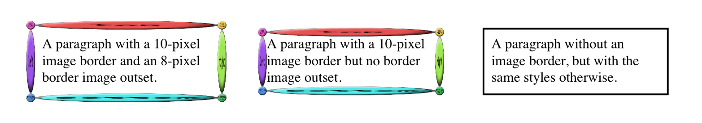
图 8-55： Creating an image border overhang
In the first case, the image border has been pushed out far enough that rather than overlapping the padding area, the images actually overlap the margin area! We can also split the difference so that the image border is roughly centered on the border area, like this:
border: 2px solid;
padding: 0.5em;
border-image-slice: 10;
border-image-width: 1;
border-image-outset: 2; /* twice the `border-width` value */What you have to watch out for is pulling the image border too far outward, to the point that it overlaps other content or gets clipped off by the edges of the browser window (or both).
ALTERING THE REPEAT PATTERN
So far, we’ve seen a lot of stretched-out images along the sides of our examples. The stretching can be very handy in some situations, but a real eyesore in others. With border-image-repeat, you can change how those sides are handled.
Let’s see these values in action and then discuss each in turn.
We’ve already seen stretch, so the effect is familiar. Each side gets a single image, stretched to match the height and width of the border side area the image is filling.
repeat has the image tile until it fills up all the space in its border side area. The exact arrangement is to center the image in its side box, and then tile copies of the image outward from that point, until the border side area is filled. This can lead to some of the repeated images being clipped at the sides of the border area, as seen in Figure 8-56.
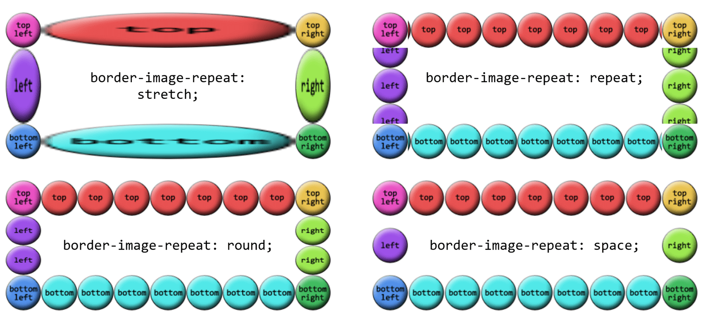
图 8-56： Various image-repeat patterns
round is a little different. With this value, the browser divides the length of the border side area by the size of the image being repeated inside it. It then rounds to the nearest whole number and repeats that number of images. In addition, it stretches or squashes the images so that they just touch each other as they repeat.
As an example, suppose the top border side area is 420 pixels wide, and the image being tiled is 50 pixels wide. 420 divided by 50 is 8.4, so that’s rounded to 8. Thus, 8 images are tiled. However, each is stretched to be 52.5 pixels wide (420 ÷ 8 = 52.5). Similarly, if the right border side area is 280 pixels tall, a 50-pixel-tall image will be tiled 6 times (280 ÷ 50 = 5.6, rounded to 6) and each image will be squashed to be 46.6667 pixels tall (280 ÷ 6 = 46.6667). If you look closely at Figure 8-56, you can see the top and bottom circles are a stretched a bit, whereas the right and left circles show some squashing.
The last value, space, starts out similar to round, in that the border side area’s length is divided by the size of the tiled image and then rounded. The differences are that the resulting number is always rounded down, and images are not distorted, but instead distributed evenly throughout the border area.
Thus, given a top border side area 420 pixels wide and a 50-pixel-wide image to be tiled, there will still be 8 images to repeat (8.4 rounded down is 8). The images will take up 400 pixels of space, leaving 20 pixels. That 20 pixels is divided by 8, which is 2.5 pixels. Half of that is put to each side of each image, meaning each image gets 1.25 pixels of space to either side. That puts 2.5 pixels of space between each image, and 1.25 pixels of space before the first and after the last image. Figure 8-57 shows a few examples of space repeating.
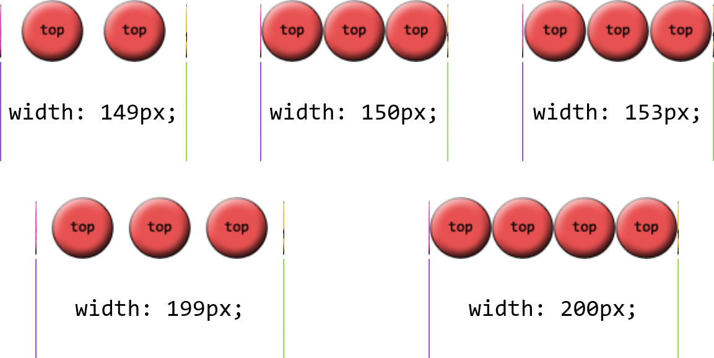
图 8-57： A variety of space repetitions
As of late 2017, Chrome and Opera did not support space on border images.
SHORTHAND BORDER IMAGE
There is a single shorthand property for border images, which is (unsurprisingly enough) border-image. It’s a little unusual in how it’s written, but it offers a lot of power without a lot of typing.
This property has, it must be admitted, a somewhat unusual value syntax. In order to get all the various properties for slices and widths and offsets, and be able to tell which was which, the decision was made to separate them by solidus symbols (/) and require them to be listed in a specific order: slice, then width, then offset. The image source and repeat values can go anywhere outside of that three-value chain. Therefore, the following rules are equivalent:
.example {
border-image-source: url(eagles.png);
border-image-slice: 40% 30% 20% fill;
border-image-width: 10px 7px;
border-image-outset: 5px;
border-image-repeat: space;
}
.example {
border-image: url(eagles.png) 40% 30% 20% fill / 10px 7px / 5px space;
}
.example {
border-image: url(eagles.png) space 40% 30% 20% fill / 10px 7px / 5px;
}
.example {
border-image: space 40% 30% 20% fill / 10px 7px / 5px url(eagles.png);
}The shorthand clearly means less typing, but also less clarity at a glance.
As is usually the case with shorthand properties, leaving out any of the individual pieces means that the defaults will be supplied. For example, if we just supply an image source, the rest of the properties will get their default values. Thus, the following two declarations will have exactly the same effect:
border-image: url(orbit.svg);
border-image: url(orbit.svg) stretch 100% / 1 / 0;SOME EXAMPLES
Border images can be tricky to internalize, conceptually speaking, so it’s worth looking at some examples of ways to use them.
First, let’s look at how to set up a border with scooped-out corners and a raised appearance, like a plaque, with a fallback to a simple outset border of similar colors. We might use something like these styles and an image, which is shown in Figure 8-58, along with both the final result and the fallback result:
#plaque {
padding: 10px;
border: 3px outset goldenrod;
background: goldenrod;
border-image-source: url(i/plaque.png);
border-image-repeat: stretch;
border-image-slice: 20 fill;
border-image-width: 12px;
border-image-outset: 9px;
}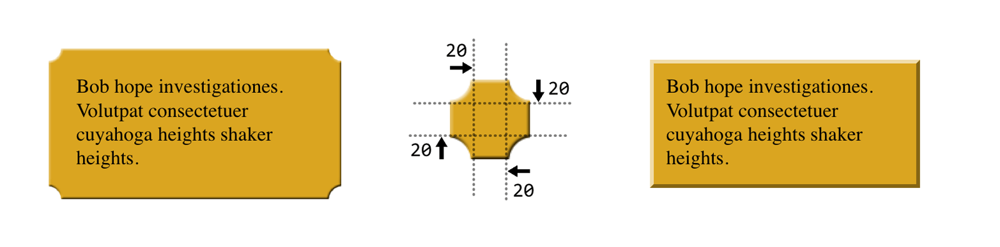
图 8-58： A simple plaque effect and its older-browser fallback
Notice how the side slices are perfectly set up to be stretched—everything about them is just repeated strips of color along the axis of stretching. They could also be repeated or rounded, of course, if not rounded, but stretching works just fine. And since that’s the default value, we could have omitted the border-image-repeat declaration altogether.
Next, let’s try to create something oceanic: an image border that has waves marching all the way around the border. Since we don’t know how wide or tall the element will be ahead of time, and we want the waves to flow from one to another, we’ll use round to take advantage of its scaling behavior while getting in as many waves as will reasonably fit. You can see the result in Figure 8-59, along with the image that’s used to create the effect:
#oceanic {
border: 2px solid blue;
border-image: url(waves.png) 50 fill / 20px / 10px round;
}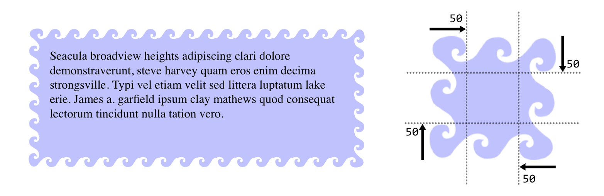
图 8-59： A wavy border
There is one thing to be wary of here, which is what happens if you add in an element background. Just to make the situation clear, we’ll add a red background to this element, with the result shown in Figure 8-60:
#oceanic {
background: red;
border: 2px solid blue;
border-image: url(waves.png) 50 fill / 20px / 10px round;
}See how the red is visible between the waves? That’s because the wave image is a PNG with transparent bits, and because of the combination of image-slice widths and outset, some of the background area is visible through the transparent parts of the border. This can be a problem, because there will be cases where you want to use a background color in addition to an image border—for the fallback case where the image fails to appear, if nothing else. Generally, this is a problem best addressed by either not needing a background for the fallback case, or else using border-image-outset to pull the image out far enough that no part of the background area is visible.
As you can see, there is a lot of power in border images. Be sure to use them wisely.
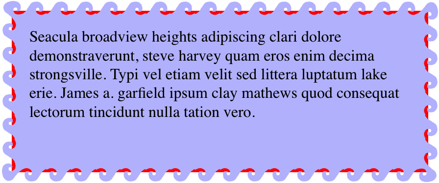
图 8-60： The background area, visible through the image border
8.4 Outlines
CSS defines a special sort of element decoration called an outline. In practice, outlines are often drawn just beyond the borders, though (as we’ll see) this is not the whole story. As the specification puts it, outlines differ from borders in three basic ways:
Outlines do not take up space.
Outlines may be nonrectangular.
User agents often render outlines on elements in the :focus state.
To which I’ll add a fourth:
Outlines are an all-or-nothing proposition: you can’t style one side of a border independently from the others.
Let’s start finding out exactly what all that means. First, we’ll run through the various properties, comparing them to their border-related counterparts.
8.4.1 Outline Styles
Much as with border-style, you can set a style for your outlines. In fact, the values will seem very familiar to anyone who’s styled a border before.
The two major differences are that outlines cannot have a hidden style, as borders can; and outlines can have auto style. This style allows the user agent to get extra-fancy with the appearance of the outline, as explained in the CSS specification:
The auto value permits the user agent to render a custom outline style, typically a style which is either a user interface default for the platform, or perhaps a style that is richer than can be described in detail in CSS, e.g. a rounded edge outline with semi-translucent outer pixels that appears to glow.
Beyond those two differences, outlines have all the same styles that borders have, as illustrated in Figure 8-61.
图 8-61： Various outline styles
The less obvious difference is that unlike border-style, outline-style is not a shorthand property. You can’t use it to set a different outline style for each side of the outline, because outlines can’t be styled that way. There is no outline-top-style. This is true for all the rest of the outline properties, with the exception of outline, which we’ll get to in a bit.
8.4.2 Outline Width
Once you’ve decided on a style for the outline, assuming the style isn’t none, you can define a width for the outline.
There’s very little to say about outline width that we didn’t already say about border width. If the outline style is none, then the outline’s width is set to 0. thick is wider than medium, which is wider than thin, but the specification doesn’t define exact widths for these keywords. Figure 8-62 shows a few different outline widths.
图 8-62： Various outline widths
As before, the real difference here is that outline-width is not a shorthand property. You can only set one width for the whole outline, and cannot set different widths for different sides. (The reasons for this will soon become clear.)
8.4.3 Outline Color
Does your outline have a style and a width? Great! Let’s give it some color!
This is pretty much the same as border-color, with the caveat that it’s an all-or-nothing proposition—for example, there’s no outline-left-color.
The one major difference is the default value, invert. What invert does is perform a “color conversion” on all pixels within the visible parts of the outline. This is easier to show than explain, so see Figure 8-63 for the expected results of this style:
h1 {
outline-style: dashed;
outline-width: 10px;
outline-color: invert;
}图 8-63： Color inversion
The advantage to color inversion is that it can make the outline stand out in a wide variety of situations, regardless of what’s behind it. There is an exception: if you invert the color gray (or rgb(50%,50%,50%) or hsl(0,0%,50%) or any of their equivalents), you get exactly the same color back. Thus, outline-color: invert will make the outline invisible on a gray background. The same will be true for background colors that are very close to gray.
As of late 2017, invert was only supported by Microsoft Edge and IE11. Most other browsers treated it as an error and thus used the default color (the value of color for the element).
THE ONLY OUTLINE SHORTHAND
So far, we’ve seen three outline properties that look like shorthand properties, but aren’t. Time for the one outline property that is a shorthand: outline.
It probably comes as little surprise that, like border, this is a convenient way to set the overall style, width, and color of an outline. Figure 8-64 illustrates a variety of outlines.
图 8-64： Various outlines
Thus far, outlines seem very much like borders. So how are they different?
8.4.4 How They Are Different
The first major difference between borders and outlines is that outlines don’t affect layout at all. In any way. They’re very purely presentational.
To understand what this means, consider the following styles, illustrated in Figure 8-65:
h1 {
padding: 10px;
border: 10px solid green;
outline: 10px dashed #9ab;
margin: 10px;
}图 8-65： Outline over margin
Looks normal, right? What you can’t see is that the outline is completely covering up the margin. If we put in a dotted line to show the margin edges, they’d run right along the outside edge of the outline. (We’ll deal with margins in the next section.)
This is what’s meant by outlines not affecting layout. Let’s consider another example, this time with two span elements that are given outlines. You can see the results in Figure 8-66:
span {
outline: 1em solid rgba(0, 128, 0, 0.5);
}
span + span {
outline: 0.5em double purple;
}图 8-66： Overlapping outlines
The outlines don’t affect the height of the lines, but they also don’t shove the spans to one side or another. The text is laid out as if the outlines aren’t even there.
This raises an even more interesting feature of outlines: they are not always rectangular, nor are they always contiguous. Consider this outline applied to a strong element that breaks across two lines, as illustrated in two different scenarios in Figure 8-67:
strong {
outline: 2px dotted gray;
}图 8-67： Discontinuous and nonrectangular outlines
In the first case, there are two complete outline boxes, one for each fragment of the strong element. In the second case, with the longer strong element causing the two fragments to be stacked together, the outline is “fused” into a single polygon that encloses the fragments. You won’t find a border doing that.
This is why there are no side-specific outline properties like outline-right-style: if an outline becomes nonrectangular, which sides are the right sides?
As of late 2017, not every browser combined the inline fragments into a single contiguous polygon. In those which did not support this behavior, each fragment was still a self-contained rectangle, as in the first example in Figure 8-67.
8.5 Margins
a margin creates extra blank space around an element. Blank space generally refers to an area in which other elements cannot also exist and in which the parent element’s background is visible. Figure 8-68 shows the difference between two paragraphs without any margins and the same two paragraphs with some margins.
图 8-68： Paragraphs with, and without, margins
The simplest way to set a margin is by using the property margin.
Suppose you want to set a quarter-inch margin on h1 elements, as illustrated in Figure 8-69 (a background color has been added so you can clearly see the edges of the content area):
h1 {
margin: 0.25in;
background-color: silver;
}This sets a quarter-inch of blank space on each side of an h1 element. In Figure 8-69, dashed lines represent the blank space, but the lines are purely illustrative and would not actually appear in a web browser.
图 8-69： Setting a margin for h1 elements
margin can accept any length of measure, whether in pixels, inches, millimeters, or ems. However, the default value for margin is effectively 0 (zero), so if you don’t declare a value, by default, no margin should appear.
In practice, however, browsers come with preassigned styles for many elements, and margins are no exception. For example, in CSS-enabled browsers, margins generate the “blank line” above and below each paragraph element. Therefore, if you don’t declare margins for the p element, the browser may apply some margins on its own. Whatever you declare will override the default styles.
Finally, it’s possible to set a percentage value for margin. The details of this value type will be discussed in “Percentages and Margins”.
8.5.1 Length Values and Margins
Any length value can be used in setting the margins of an element. It’s easy enough, for example, to apply a 10-pixel whitespace around paragraph elements. The following rule gives paragraphs a silver background, 10 pixels of padding, and a 10-pixel margin:
p {
background-color: silver;
padding: 10px;
margin: 10px;
}In this case, 10 pixels of space have been added to each side of every paragraph, just beyond the outer border edge. You can just as easily use margin to set extra space around an image. Let’s say you want 1 em of space surrounding all images:
img {
margin: 1em;
}That’s all it takes.
At times, you might desire a different amount of space on each side of an element. That’s easy as well, thanks to the value replication behavior we’ve used before. If you want all h1 elements to have a top margin of 10 pixels, a right margin of 20 pixels, a bottom margin of 15 pixels, and a left margin of 5 pixels, here’s all you need:
h1 {
margin: 10px 20px 15px 5px;
}It’s also possible to mix up the types of length value you use. You aren’t restricted to using a single length type in a given rule, as shown here:
h2 {
margin: 14px 5em 0.1in 3ex;
} /* value variety! */Figure 8-70 shows you, with a little extra annotation, the results of this declaration.
图 8-70： Mixed-value margins
8.5.2 Percentages and Margins
It’s possible to set percentage values for the margins of an element. As with padding, percentage margins values are computed in relation to the width of the parent element’s content area, so they can change if the parent element’s width changes in some way. For example, assume the following, which is illustrated in Figure 8-71:
p {
margin: 10%;
}<div style="width: 200px; border: 1px dotted;">
<p>
This paragraph is contained within a DIV that has a width of 200 pixels, so
its margin will be 10% of the width of the paragraph's parent (the DIV).
Given the declared width of 200 pixels, the margin will be 20 pixels on all
sides.
</p>
</div>
<div style="width: 100px; border: 1px dotted;">
<p>
This paragraph is contained within a DIV with a width of 100 pixels, so its
margin will still be 10% of the width of the paragraph's parent. There will,
therefore, be half as much margin on this paragraph as that on the first
paragraph.
</p>
</div>Note that the top and bottom margins are consistent with the right and left margins; in other words, the percentage of top and bottom margins is calculated with respect to the element’s width, not its height. We’ve seen this before—in “Padding”, in case you don’t remember—but it’s worth reviewing again, just to see how it operates.
图 8-71： Parent widths and percentages
As with padding, the treatment of percentage values for top and bottom margins is different for most positioned elements, flex items, and grid items, where they are calculated with respect to the height of their formatting context.
8.5.3 Single-Side Margin Properties
You guessed it: there are properties that let you set the margin on a single side of the box, without affecting the others.
These properties operate as you’d expect. For example, the following two rules will give the same amount of margin:
h1 {
margin: 0 0 0 0.25in;
}
h2 {
margin-left: 0.25in;
}8.5.4 Margin Collapsing
An interesting and often overlooked aspect of the top and bottom margins on block boxes is that they collapse. This is the process by which two (or more) margins that interact collapse to the largest of the interacting margins.
The canonical example of this is the space between paragraphs. Generally, that space is set using a rule like this:
p {
margin: 1em 0;
}So that sets every paragraph to have top and bottom margins of 1em. If margins didn’t collapse, then whenever one paragraph followed another, there would be two ems of space between them. Instead, there’s only one; the two margins collapse together.
To illustrate this a little more clearly, let’s return to the percentage-margin example, only this time, we’ll add dashed lines to indicate where the margins fall. This is seen in Figure 8-72.
图 8-72： Collapsing margins
The example shows the separation distance between the contents of the two paragraphs. It’s 60 pixels, because that’s the larger of the two margins that are interacting. The 30-pixel top margin of the second paragraph is collapsed, leaving the first paragraph’s top margin in charge.
So in a sense, Figure 8-72 is lying: if you take the CSS specification strictly at its word, the top margin of the second paragraph is actually reset to zero. It doesn’t stick into the bottom margin of the first paragraph because when it collapses, it isn’t there anymore. The end result is the same, though.
Margin collapsing also explains some oddities that arise when one element is inside another. Consider the following styles and markup:
header {
background: goldenrod;
}
h1 {
margin: 1em;
}<header>
<h1>Welcome to ConHugeCo</h1>
</header>The margin on the h1 will push the edges of the header away from the content of the h1, right? Well, not entirely. See Figure 8-73.
What happened? The side margins took effect—we can see that from the way the text is moved over—but the top and bottom margins are gone!
Only they aren’t gone. They’re just sticking out of the header element, having interacted with the (zero-width) top margin of the header element. The magic of dashed lines in Figure 8-74 show us what’s happening.
图 8-73： Margins collapsing with parents
图 8-74： Margins collapsing with parents, revealed
There they are—pushing away any content that might come before or after the header element, but not pushing away the edges of the header itself. This is the intended result, even if it’s often not the desired result. As for why it’s intended, imagine happens if you put a paragraph in a list item. Without the specified margin-collapsing behavior, the paragraph’s top margin would shove it downward, where it would be far out of alignment with the list item’s bullet (or number).
Margin collapsing can be interrupted by factors such as padding and borders on parent elements. For more details, see the discussion in the section “Collapsing Vertical Margins” in Chapter 7 of Basic Visual Formatting (O’Reilly).
8.5.5 Negative Margins
It’s possible to set negative margins for an element. This can cause the element’s box to stick out of its parent or to overlap other elements. Consider these rules, which are illustrated in Figure 8-75:
div {
border: 1px solid gray;
margin: 1em;
}
p {
margin: 1em;
border: 1px dashed silver;
}
p.one {
margin: 0 -1em;
}
p.two {
margin: -1em 0;
}图 8-75： Negative margins in action
In the first case, the math works out such that the paragraph’s computed width plus its right and left margins are exactly equal to the width of the parent div. So the paragraph ends up two ems wider than the parent element without actually being “wider” (from a mathematical point of view). In the second case, the negative top and bottom margins effectively reduce the computed height of the element and move its top and bottom outer edges inward, which is how it ends up overlapping the paragraphs before and after it.
Combining negative and positive margins is actually very useful. For example, you can make a paragraph “punch out” of a parent element by being creative with positive and negative margins, or you can create a Mondrian effect with several overlapping or randomly placed boxes, as shown in Figure 8-76:
div {
background: hsl(42, 80%, 80%);
border: 1px solid;
}
p {
margin: 1em;
}
p.punch {
background: white;
margin: 1em -1px 1em 25%;
border: 1px solid;
border-right: none;
text-align: center;
}
p.mond {
background: rgba(5, 5, 5, 0.5);
color: white;
margin: 1em 3em -3em -3em;
}Thanks to the negative bottom margin for the “mond” paragraph, the bottom of its parent element is pulled upward, allowing the paragraph to stick out of the bottom of its parent.
图 8-76： Punching out of a parent
8.5.6 Margins and Inline Elements
Margins can also be applied to inline elements. Let’s say you want to set top and bottom margins on strongly emphasized text:
strong {
margin-top: 25px;
margin-bottom: 50px;
}This is allowed in the specification, but since you’re applying the margins to an inline nonreplaced element, and margins are always transparent, they will have absolutely no effect on the line height. In effect, they’ll have no effect at all.
As with padding, things change a bit when you apply margins to the left and right sides of an inline nonreplaced element, as illustrated in Figure 8-77:
strong {
margin-left: 25px;
background: silver;
}图 8-77： An inline nonreplaced element with a left margin
Note the extra space between the end of the word just before the inline nonreplaced element and the edge of the inline element’s background. You can add that extra space to both ends of the inline element if you want:
strong {
margin: 25px;
background: silver;
}As expected, Figure 8-78 shows a little extra space on the right and left sides of the inline element, and no extra space above or below it.
图 8-78： An inline nonreplaced element with 25-pixel side margins
Now, when an inline nonreplaced element stretches across multiple lines, the situation changes. Figure 8-79 shows what happens when an inline nonreplaced element with a margin is displayed across multiple lines:
strong {
margin: 25px;
background: silver;
}图 8-79： An inline nonreplaced element with 25-pixel side margin displayed across two lines of text
The left margin is applied to the beginning of the element and the right margin to the end of it. Margins are not applied to the right and left side of each line fragment. Also, you can see that, if not for the margins, the line may have broken after “text” instead of after “strongly emphasized.” Margins only affect line breaking by changing the point at which the element’s content begins within a line.
The way margins are (or aren’t) applied to the ends of each line box can be altered with the property box-decoration-break. See Chapter 7 for more details.
The situation gets even more interesting when we apply negative margins to inline nonreplaced elements. The top and bottom of the element aren’t affected, and neither are the heights of lines, but the left and right ends of the element can overlap other content, as depicted in Figure 8-80:
strong {
margin: -25px;
background: silver;
}图 8-80： An inline nonreplaced element with a negative margin
Replaced inline elements represent yet another story: margins set for them do affect the height of a line, either increasing or reducing it, depending on the value for the top and bottom margin. The left and right margins of an inline replaced element act the same as for a nonreplaced element. Figure 8-81 shows a series of different effects on layout from margins set on inline replaced elements.
图 8-81： Inline replaced elements with differing margin values
8.6 Summary
The ability to apply margins, borders, and padding to any element is one of the things that sets CSS so far above traditional web markup. In the past, enclosing a heading in a colored, bordered box meant wrapping the heading in a table, which is a really bloated and awful way to create so simple an effect. It is this sort of power that makes CSS so compelling.